HOKENA CRM 説明書
保険代理店業務を止めずに回すための業務 CRM、HOKENA CRM の利用マニュアルです。 管理者・選定担当者の方 が、機能・運用・コンプライアンス対応を把握し、現場への導入判断や運用設計を行うことを想定しています。
目次
| # | 文書 | 内容 |
|---|---|---|
| 01 | システム概要 | 何のためのシステムか／全体像・技術構成 |
| 02 | はじめに（ログインと共通操作） | ログイン・画面構成・キーボード操作 |
| 03 | 顧客管理 | 顧客の検索・登録・詳細・家族構成 |
| 04 | 契約管理 | 契約の登録・特約・更改 |
| 05 | 案件管理 | カンバン／一覧／案件詳細 |
| 06 | 意向把握 | 保険業法対応（4 ステップウィザード／承認フロー） |
| 07 | 精算・MDRT 管理 | 月次精算・CSV インポート・MDRT 進捗 |
| 08 | カレンダー | 月／週ビュー・予定管理 |
| 09 | レポート | 月次推移・担当者別・商品別・年代別 |
| 10 | ダッシュボード | KPI・満期アラート |
| 11 | 設定 | 組織情報・通知・コンプライアンス・ユーザー管理 |
| 12 | Lark 連携 | SSO・Base・Calendar・Approval・Bot・通知テンプレ |
| 13 | 管理者運用 | 招待・ロール変更・パスワード再発行・バックアップ |
| 14 | セキュリティとコンプライアンス | RLS・監査ログ・保険業法・データ保持 |
スクリーンショットは assets/ に配置されています。
配布用ファイル
Markdown を開かなくても共有できるように、説明書と打ち合わせ用サマリーを HTML / PDF で出力しています。
| 文書 | HTML | |
|---|---|---|
| HOKENA CRM 説明書 | hokena-crm-manual.html | hokena-crm-manual.pdf |
| 現状報告・打ち合わせ確認事項 | customer-meeting-brief.html | customer-meeting-brief.pdf |
再生成する場合はリポジトリルートで pnpm docs:export を実行します。
読み方のヒント
- 新しく評価する方 は
01 → 02 → 10（概要 → 共通操作 → ダッシュボード）の順で読むと全体像が掴めます。 - 現場運用に向けた検証 は
03 → 04 → 06 → 07の業務フロー順に読むと業務適合性を確認できます。 - 管理者の方 は
11 → 12 → 13 → 14で運用 / 連携 / 統制を確認できます。
表記ルール
- 画面上のクリック対象は ［新規登録］ のように 隅付き括弧 で示します（ボタン・タブ・メニュー）。
- パス・URL・スキーマ名は
等幅で示します。 - 注意は次の形式で表示します。
⚠️ 物理削除はできません。意向把握記録は保険業法対応のため論理削除（
deleted_at）のみ。
用語
| 用語 | 意味 |
|---|---|
| テナント | 1 つの代理店組織。データ・設定はテナント単位で完全に分離されます (RLS) |
| ロール | admin / agent / staff の 3 種。権限と画面表示が変わります |
| 高齢者 | 設定 > コンプライアンスで定めた年齢以上の顧客。意向把握フローで追加対応が必要 |
| 意向把握 | 保険業法に基づくニーズヒアリング記録。物理削除禁止 |
| MDRT | Million Dollar Round Table。生命保険業界の年間実績指標 |
01. システム概要
何のためのシステムか
HOKENA CRM は、生命保険・損害保険代理店の業務オペレーションを止めずに、コンプライアンス要件を満たしながら回すための業務 CRM です。 グラスト G-DX 共通ルール（業務 SaaS としての落ち着いた UI / 監査ログ重視 / 運用負荷優先）に従って実装されています。
主なゴール：
- 顧客と契約の一元管理 — 顧客マスタ・家族構成・契約・特約・更改履歴を一画面でたどれる
- 保険業法対応の証跡化 — 意向把握記録は承認フロー付きで物理削除禁止
- 満期・タスク漏れの防止 — 満期 60 日前アラート、ダッシュボード／レポート／通知連携
- 代理店経営の見える化 — 月次推移・担当者別実績・MDRT 進捗・商品カテゴリ別構成
- Lark 連携前提の運用 — SSO、承認フロー、通知 Bot、Base 同期を将来一体運用
全体像
機能カテゴリ
┌─ ホーム ────────────────┐
│ ダッシュボード │ KPI / 満期アラート
└─────────────────────────┘
┌─ 顧客・契約 ────────────┐
│ 顧客管理 │ 検索 / 登録 / 家族構成 / 高齢者フラグ
│ 契約管理 │ 特約 / 更改履歴 / 満期管理
└─────────────────────────┘
┌─ 案件・活動 ────────────┐
│ 案件管理 │ カンバン (ステージ別) / 活動履歴
│ カレンダー │ 月・週ビュー
└─────────────────────────┘
┌─ 保険業法対応 ──────────┐
│ 意向把握 │ 4 ステップウィザード / 承認 / 論理削除のみ
└─────────────────────────┘
┌─ 精算・成績 ────────────┐
│ 精算・MDRT 管理 │ CSV インポート / 月次精算 / 目標進捗
└─────────────────────────┘
┌─ 分析・設定 ────────────┐
│ レポート │ 月次・担当者・商品カテゴリ・年代分布
│ Lark 連携 │ SSO / Base / Calendar / Approval / Bot
│ 設定 │ 組織 / ユーザー / 通知 / コンプラ
└─────────────────────────┘ロール (権限) と画面アクセス
| ロール | 主な役割 | 画面アクセス |
|---|---|---|
admin | 代理店オーナー・管理者 | すべて。設定 / ユーザー招待 / Lark 連携 / 監査ログ |
agent | 代理店所属の担当者 | 自分担当の顧客・契約・案件・意向把握。レポート閲覧可 |
staff | 事務スタッフ | 顧客・契約の検索／登録／編集。意向把握の承認は不可 |
⚠️ ロール別の表示制御は UI ガード（画面側）と RLS（DB 側）の二重で行われます。仮に URL を直叩きされてもサーバー側で拒否されます。詳細は 14. セキュリティ を参照。
技術構成
エンドユーザー向けのドキュメントとして、設定や運用に関わる範囲のみ記載します。
| レイヤー | 採用技術 |
|---|---|
| フレームワーク | Next.js 16 (App Router, Turbopack) |
| 言語 | TypeScript (strict) |
| UI / デザイン | React 19 + Tailwind CSS v4 + shadcn/ui (base-nova) |
| フォント | Noto Sans JP |
| アイコン | Lucide React |
| データベース | Supabase (PostgreSQL) — テナント単位の Row Level Security |
| 認証 | ID + パスワード（Supabase Auth） / Lark OAuth（準備中） |
| 通知 | Lark Bot（準備中） / メール（準備中） |
| デプロイ | Vercel（想定） |
実装上の重要な特徴：
- 論理削除（
deleted_at） が基本。顧客・契約・案件は復元可能、意向把握は復元すら原則しません。 tenants.settingsに JSONB で代理店ごとの設定を保持。Lark 連携設定もすべて DB 管理（ハードコード禁止）。updated_at自動更新トリガー が主要テーブルに設定済み。
このシステムが「やらないこと」
導入検討時の判断材料として、明示的に対象外としているスコープを示します。
- 保険会社の見積もり機能・申込書作成は 行いません（外部の保険会社システム想定）
- 顧客との直接的なメッセージング機能は 行いません（Lark / メール / 電話を運用で使う想定）
- 会計・税務処理は 行いません（精算データのエクスポートまで）
02. はじめに — ログインと共通操作
ログイン
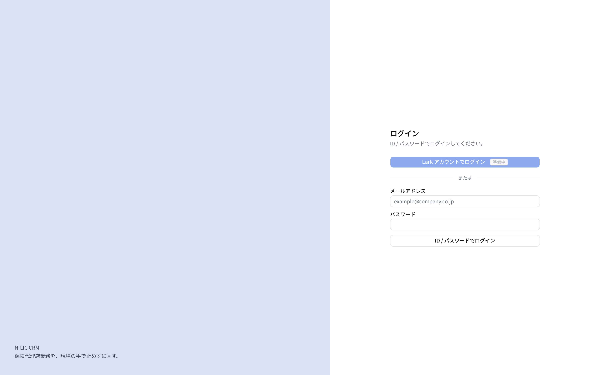
- ブラウザで
https://<代理店ドメイン>/loginにアクセスします。 - ［ID／パスワード］ にメールアドレスとパスワードを入力し、［ログイン］ をクリックします。
- ログインに成功するとダッシュボードに遷移します。
⚠️ ［Lark アカウントでログイン］ ボタンは現状無効化されています。Lark Developer Console での登録と環境変数設定が完了すると有効化されます（12. Lark 連携 参照）。
初回ログイン
- 管理者が招待メールを送ると、招待リンク経由でパスワード設定後に通常ログインが可能になります。
- パスワードを忘れた場合は管理者に再発行を依頼してください。
ログインできない場合
| 症状 | 原因の例 | 対応 |
|---|---|---|
| 「ログインに失敗しました」 | パスワード誤り／メールアドレス誤り | 入力内容を再確認 |
| 「このユーザーにはプロファイルが登録されていません」 | Supabase Auth は通ったが user_profiles が未作成 | 管理者に連絡 |
| ログイン後すぐにログイン画面に戻る | セッション Cookie がブロックされている／別ドメインで保存されている | ブラウザの Cookie 設定を確認、シークレットウィンドウで再試行 |
画面構成
ログイン後の画面は サイドバー + ヘッダー + メインエリア の 3 領域で構成されます。
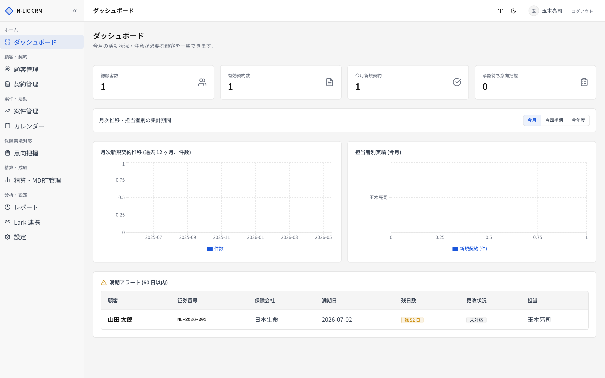
① サイドバー
- グループ単位でナビゲーションが整理されています：
- ホーム / 顧客・契約 / 案件・活動 / 保険業法対応 / 精算・成績 / 分析・設定
- 左下のアイコンで 開閉トグル ができます。折りたたみ状態はブラウザに記憶されます (
hokena_sidebar_collapsed)。
② ヘッダー
ヘッダー右側には以下が並びます。
| アイコン | 機能 | 説明 |
|---|---|---|
| A | フォントサイズ | 小 (90%) / 標準 (100%) / 大 (110%) を切替 |
| ☾／☀ | テーマ切替 | ホワイト ↔ ブラックテーマ |
③ メインエリア
すべての画面に ページヘッダー（タイトル + 説明） が表示され、その下にコンテンツが続きます。
共通の操作パターン
業務システムとして同じ操作感を全画面で揃えています。
検索とフィルター

- 一覧画面の上部に検索ボックスとフィルター（状態・担当者など）があります。
- 入力した瞬間に URL のクエリパラメーターに反映され、ブックマーク・ブラウザ戻る に対応します。
- 検索クエリは 氏名 / フリガナ の部分一致で評価されます（
name.ilike+name_kana.ilike）。
ステータスバッジ
ステータスは色で意味を区別しています。以下が代表的な対応です。
| 表示 | バリアント | 主な意味 |
|---|---|---|
| 緑 | success | 既存／有効／承認済／完了 |
| 黄 | warning | 注意／満期間近／対応中 |
| 赤 | danger | 期限切れ／差戻し |
| 青 | info | 進行中 |
| グレー | muted | 休眠／辞退／対象外 |
行クリックで詳細へ
一覧の行はクリックで詳細画面へ遷移します。詳細画面では ［編集］ ／ ［削除］ など、その対象に対する操作が右上に集まっています。
モーダル
家族構成・契約特約・対応履歴・案件活動の登録などは、画面遷移ではなく モーダル で行います。Esc で閉じられます。
保存とトースト
保存操作の結果は画面右下の トースト通知 で表示されます。
- 成功時：緑のトースト（例：「契約を登録しました」）
- エラー時：赤のトースト（バリデーションエラーはフィールド横にも表示）
ショートカット
| キー | 操作 |
|---|---|
Esc | モーダルを閉じる |
Tab | 次のフィールドへフォーカス移動 |
Shift + Tab | 前のフィールドへ |
Enter | フォーカス中のボタンを押下 |
💡 検索フィールドは URL クエリと同期しています。
?q=...&status=...をブックマークすれば、よく使うフィルターを保存できます。
03. 顧客管理
顧客マスタとして、契約・案件・意向把握のすべての出発点になる画面です。 サイドバー ［顧客管理］ から開きます。
顧客一覧
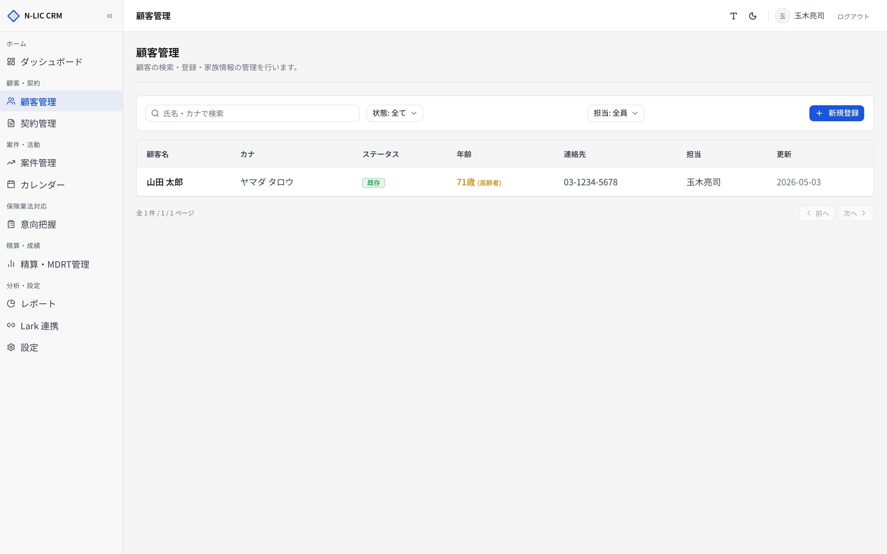
主な機能
| エリア | 機能 |
|---|---|
| 上部の検索ボックス | 氏名 / フリガナ の部分一致検索（URL クエリ q） |
| 状態フィルター | 見込 / 既存 / 休眠 を絞り込み |
| 担当フィルター | 担当者で絞り込み |
| 右上 ［新規登録］ | 新しい顧客の登録画面へ |
| 一覧の行 | クリックで顧客詳細へ |
一覧に表示される項目
| 列 | 内容 |
|---|---|
| 顧客名 | フルネーム |
| カナ | フリガナ |
| ステータス | 見込／既存／休眠（色付きバッジ） |
| 年齢 | 生年月日から自動算出（customers_with_age ビュー）。設定の閾値を超えると 黄色 で「(高齢者)」と表示 |
| 連絡先 | 電話 → なければメール |
| 担当 | 担当者氏名 |
| 更新 | 最終更新日 |
ページ送りは下部 全 N 件 / X / Y ページ とページャーで行います。1 ページあたり 20 件。
顧客を新規登録する
サイドバー ［顧客管理］ → 一覧右上の ［新規登録］ で進みます。
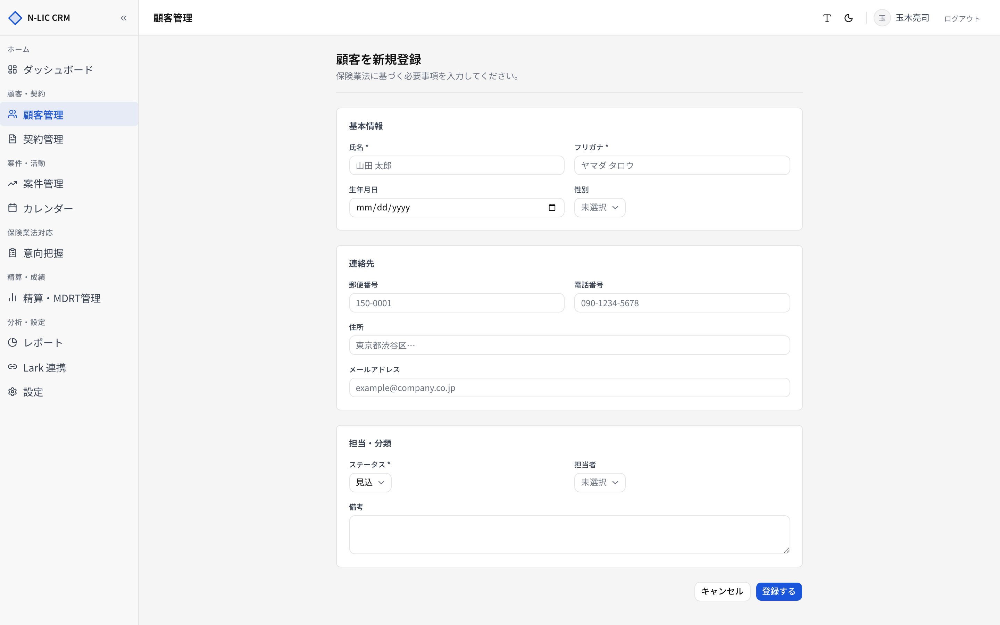
入力項目
| 項目 | 必須 | 形式・制限 |
|---|---|---|
| 氏名 | ✓ | 50 文字以内 |
| フリガナ | ✓ | カタカナ／全角スペース／長音のみ |
| 生年月日 | YYYY-MM-DD | |
| 性別 | 男性 / 女性 / その他 | |
| 郵便番号 | 150-0001 形式 | |
| 電話番号 | 数字 / - / + / () のみ、30 文字以内 | |
| 住所 | 200 文字以内 | |
| メールアドレス | RFC 準拠のメール形式 | |
| ステータス | ✓ | 見込 / 既存 / 休眠 |
| 担当者 | 在籍中のユーザーから選択（未割当のままも可） | |
| 備考 | 1000 文字以内 |
入力後 ［登録する］ で保存します。バリデーションエラーは各項目の下に表示されます。
⚠️ 空欄で送信した任意項目は内部的に
nullに正規化されます（normalizeCustomerForm）。空文字として残ることはありません。
顧客詳細
一覧で行をクリックすると顧客詳細画面が開きます。
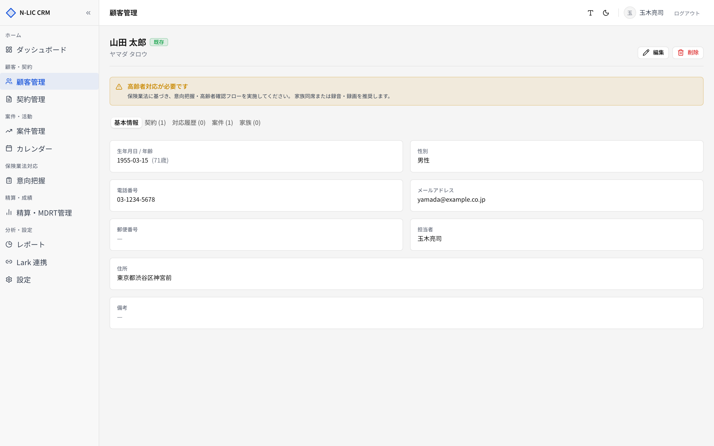
ヘッダー
- 氏名と現在のステータスバッジ
- 高齢者対応が必要な顧客の場合、注意バナー が出ます
⚠️ 高齢者対応が必要です。保険業法に基づき、意向把握・高齢者確認フローを実施してください。家族同席または録音・録画を推奨します。
- 右上に ［編集］ ／ ［削除］ が並びます。
タブ構成
| タブ | 内容 |
|---|---|
| 基本情報 | 氏名・連絡先・住所・備考・担当 |
| 契約 | この顧客の契約一覧（証券番号・商品・保険料・満期日） |
| 対応履歴 | 連絡記録（電話・面談・メール）。次回アクションと日付を残せる |
| 案件 | 進行中／過去の提案案件 |
| 家族 | 家族構成（続柄・生年月日・被保険者／受取人フラグ） |
家族構成 (家族タブ)
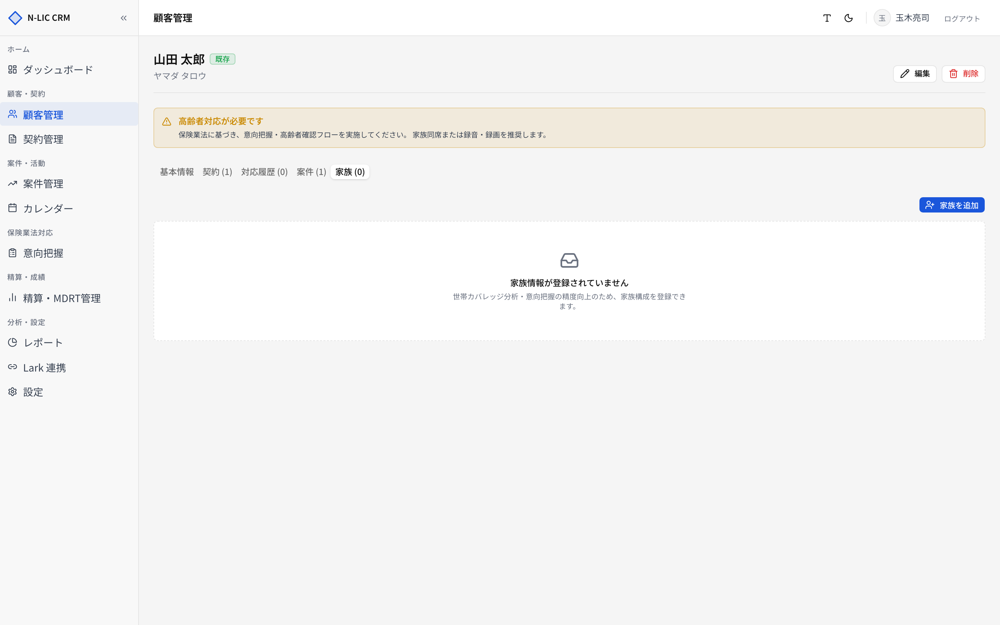
- 家族カバレッジバー で世帯メンバーのうち被保険／受取人になっている人数の比率が見えます。
- 右上 ［家族を追加］ で続柄・氏名・性別・生年月日・被保険者・受取人を入力。
- 行右の鉛筆アイコンで編集、ゴミ箱アイコンで削除（論理削除ではなく実削除）。
対応履歴 (対応履歴タブ)
- ［対応履歴を追加］ から「電話／面談／メール／その他」を選んで内容を記録します。
- 次回アクション + 期日 を入力しておくと、案件管理やレポートで活用できます。
- 履歴は最新 20 件まで表示。
顧客を編集する／削除する
編集
詳細画面右上の ［編集］ から入ります。入力フォームは新規登録と同じ項目です。
削除
詳細画面右上の ［削除］ から論理削除します。
- 削除すると一覧から非表示になります（
deleted_atがセットされる）。 - データ自体は残るため、技術担当の操作で復元が可能です。
- 削除した顧客に紐付く契約・案件・対応履歴・家族・意向把握は そのまま残ります（参照関係は維持）。
⚠️ 削除は確認モーダルで承認が必要です。誤操作防止のため、削除直前に顧客名を再表示します。
業務フロー例
新規見込み客を登録して案件を作るまで
- ［顧客管理］ → ［新規登録］ → 氏名・フリガナ・連絡先・ステータス＝
見込で保存 - 顧客詳細 → ［対応履歴を追加］ で初回連絡を記録
- ［案件］ タブ → ［案件を追加］ で提案テーマと予想保険料を登録（05. 案件管理 参照）
- 提案受領後は ［意向把握］ ウィザードを起動して保険業法対応の記録を作成（06. 意向把握 参照）
既存顧客に契約を追加する
- 一覧で顧客を検索 → 詳細へ
- ［契約］ タブ → ［契約を追加］ → 商品情報・特約・保険料・満期日を入力（04. 契約管理 参照）
トラブルシュート
| 症状 | 原因の例 | 対応 |
|---|---|---|
| 「フリガナはカタカナで入力してください」 | 半角カナや漢字が混入 | 全角カタカナのみで入力 |
| 高齢者の警告が出ない | 設定の閾値が高い／生年月日未入力 | 11. 設定 のコンプライアンスタブで elderly_age_threshold を確認 |
| 担当者リストに自分が出ない | is_active = false | 管理者にアカウント有効化を依頼 |
04. 契約管理
顧客に紐づく保険契約を管理します。証券番号・特約・満期日・更改履歴を一画面で扱います。 サイドバー ［契約管理］ から開きます。
契約一覧
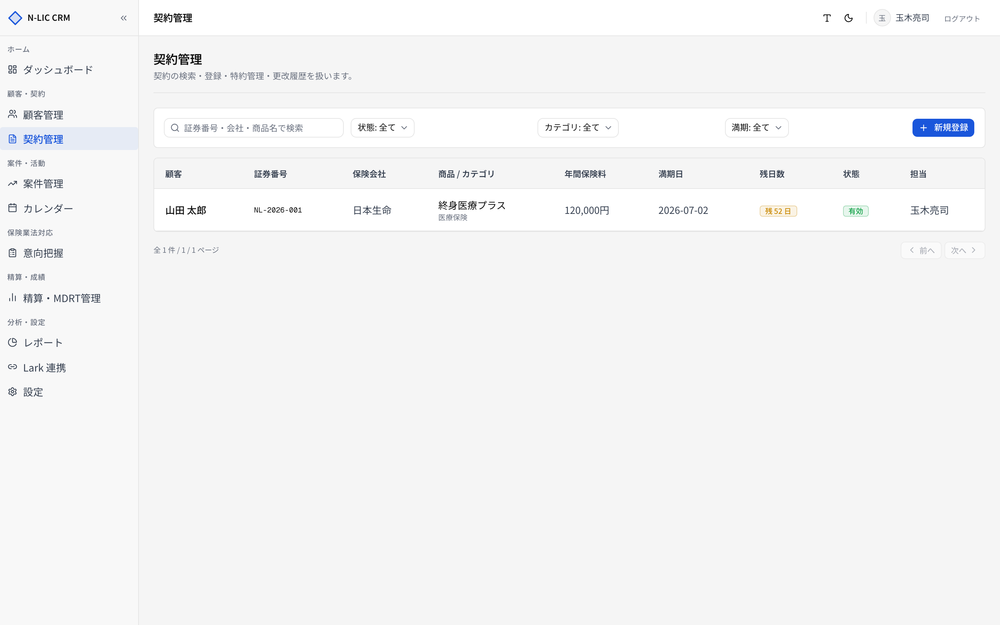
検索とフィルター
| エリア | 機能 |
|---|---|
| 検索ボックス | 証券番号 / 保険会社 / 商品名 の部分一致検索 |
| 状態フィルター | 有効 / 満期 / 解約 / 更改中 |
| カテゴリフィルター | 生命保険 / 損害保険 / 医療保険 / 介護保険 / 年金保険 |
| 満期内フィルター | 1ヶ月 / 3ヶ月 / 6ヶ月以内など、満期が近い契約を絞り込み |
| 右上 ［新規登録］ | 契約の新規登録画面へ |
一覧の項目
| 列 | 内容 |
|---|---|
| 顧客 | 紐付く顧客名 |
| 証券番号 | 一意の証券番号 |
| 保険会社 | 引受会社 |
| 商品 | 商品名 + カテゴリバッジ |
| 保険料 | 月額／年額（登録時に区別） |
| 状態 | 有効 / 満期 / 解約 / 更改中 |
| 満期日 | 残日数バッジ付き |
| 担当 | 担当者氏名 |
満期日は 昇順 で並びます。満期が近い契約から上に来ます。
契約を新規登録する
サイドバー ［契約管理］ → ［新規登録］ で進みます。
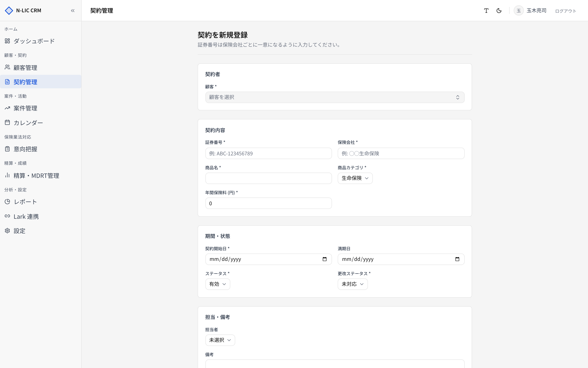
入力項目
| 項目 | 必須 | 制限 |
|---|---|---|
| 顧客 | ✓ | 既存顧客から選択 (customer_id) |
| 証券番号 | ✓ | 50 文字以内 |
| 保険会社 | ✓ | 100 文字以内 |
| 商品名 | ✓ | 100 文字以内 |
| 商品カテゴリ | ✓ | 上記 5 種から選択 |
| 保険料 | ✓ | 0 〜 1 億円 |
| 契約開始日 | ✓ | YYYY-MM-DD |
| 満期日 | 契約開始日より後 | |
| 状態 | ✓ | 有効 / 満期 / 解約 / 更改中 |
| 更改状況 | ✓ | 未対応 / 対応中 / 更改中 / 完了 / 辞退 |
| 担当者 | ユーザー選択 | |
| 備考 | 1000 文字以内 |
⚠️ 満期日 ≦ 契約開始日 で送信するとバリデーションエラーになります。
顧客詳細経由での登録
顧客詳細 → ［契約］ タブ → ［契約を追加］ からも、customer_id をプリセットした状態で登録できます。
契約詳細
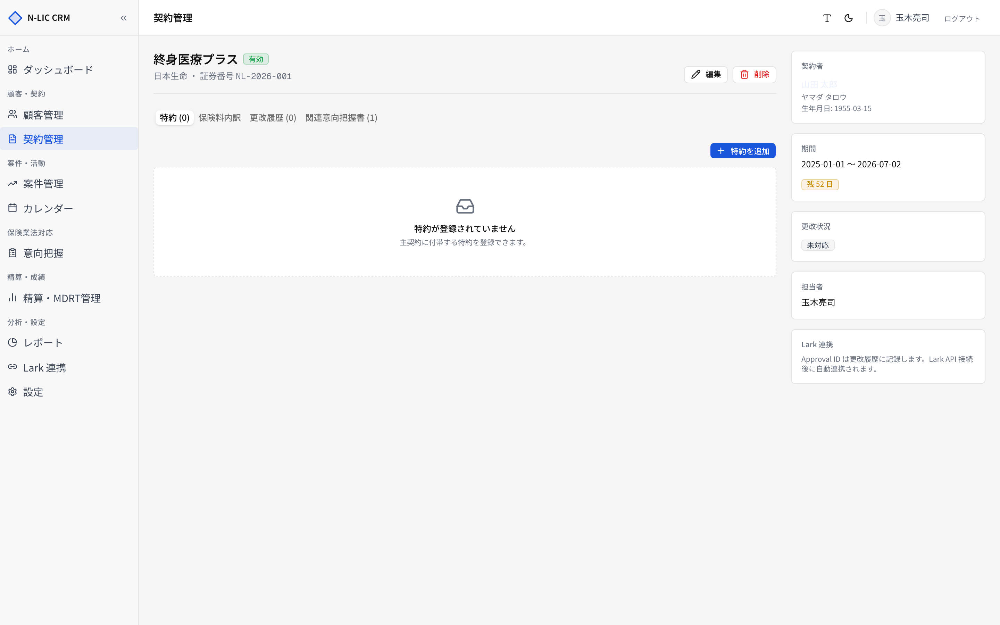
ヘッダーには 証券番号 ・ 状態バッジ ・ 満期残日数 が表示されます。 右上に ［編集］ ／ ［削除］（論理削除）が並びます。
タブ構成
| タブ | 内容 |
|---|---|
| 特約 | 主契約に紐づく特約（複数登録可） |
| 保険料内訳 | 月額／年額の換算、特約合計を含む |
| 更改履歴 | 更改ごとの内容・保険料変更・Lark 承認 ID |
| 関連意向把握書 | この契約締結に紐づく意向把握記録 |
特約タブ

［特約を追加］ から特約を登録。
| 項目 | 必須 | 制限 |
|---|---|---|
| 特約名 | ✓ | 100 文字以内 |
| 補償内容 | 500 文字以内 | |
| 保険料 | 0 〜 1 億円 | |
| 満期日 | YYYY-MM-DD | |
| 有効フラグ | ✓ | 解約された特約は無効化 |
特約は 論理削除（is_active = false） で運用されます。完全に消したい場合は技術担当に依頼してください。
更改履歴タブ
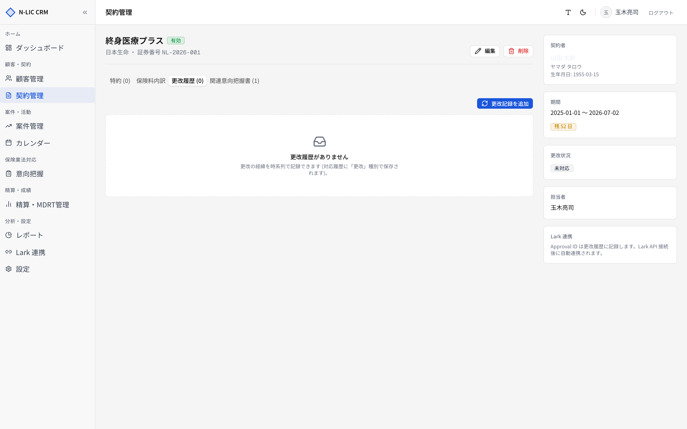
満期 60 日前になるとダッシュボードと一覧で警告表示されます。更改が発生したら ［更改履歴を追加］ で記録します。
| 項目 | 必須 | 内容 |
|---|---|---|
| 更改日 | ✓ | 契約継続日 |
| 内容 | ✓ | 2000 文字以内 |
| 新保険料 | 変更後の月額／年額 | |
| 担当者 | ||
| Lark 承認 ID | 連携時の承認チケット番号 | |
| 次の更改ステータス | ✓ | 上記 5 種 |
📝 更改記録は 1 契約に何件でも登録できます。履歴を残すことで、保険料変動・対応経緯を後追いできます。
関連意向把握書タブ
この契約が、どの意向把握記録に基づいて締結されたかを表示します。意向把握 → 提案 → 契約 のトレースが取れます。
業務フロー例
新規契約を入れるとき
- 顧客詳細 → ［契約］ タブ → ［契約を追加］
- 商品・保険料・契約期間を入力 → ［登録する］
- 特約があれば契約詳細 → ［特約］ タブから追加
- 意向把握書がある場合は 06. 意向把握 で関連付け
満期更改の流れ
- ダッシュボード or 契約一覧 → 満期 60 日以内の警告が出ている契約をクリック
- 契約詳細 → 更改状況を「対応中」に更新
- 顧客と面談 → 新しい商品で ［契約を追加］（新契約）
- 旧契約の詳細 → ［更改履歴を追加］ で経緯と Lark 承認 ID を記録
- 旧契約の状態を「満期」or「解約」に変更
トラブルシュート
| 症状 | 原因 | 対応 |
|---|---|---|
| 満期日が入力できない | 契約開始日より前 | 開始日を確認 |
| 「顧客を選択してください」 | UUID が未選択 | コンボボックスで顧客を選び直す |
| 保険料が大きすぎるエラー | 1 億円超 | 入力値を確認（円単位・税込み） |
05. 案件管理
提案フェーズの活動を、カンバン／リストで一元管理します。 サイドバー ［案件管理］ から開きます。
ステージ定義
案件は以下の 7 ステージ で管理します。
| # | ステージ | 内容 |
|---|---|---|
| 1 | 初回接触 | 顧客との最初のコンタクト |
| 2 | ニーズ把握 | ヒアリング・課題抽出 |
| 3 | 提案中 | 商品提案・比較 |
| 4 | 見積提出 | 見積もり提示 |
| 5 | クロージング | 締結合意の最終段階 |
| 6 | 成約 | 契約締結（04. 契約管理 に契約を登録） |
| 7 | 失注 | 失注理由を記録 |
カンバンビューには 進行中の 5 ステージ のみが列として表示され、成約・失注はリストビューでのみ確認できます。
案件一覧
カンバンビュー（標準）
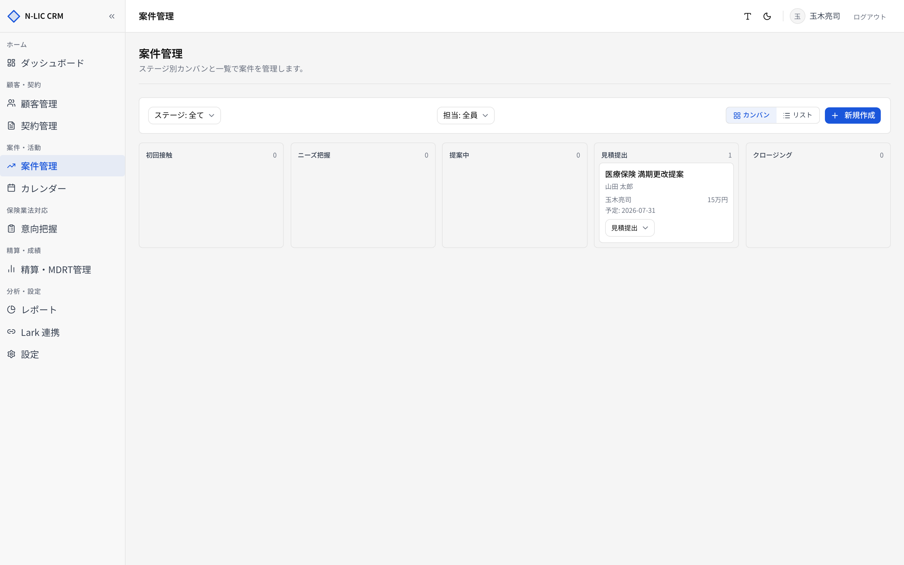
各列に該当ステージの案件カードが並びます。
| エリア | 機能 |
|---|---|
| 上部 ［カンバン / リスト］ | ビュー切替（ブラウザに記憶） |
| ステージフィルター | 特定ステージのみ表示 |
| 担当者フィルター | 担当者で絞り込み |
| 右上 ［新規作成］ | 案件登録モーダルを開く |
カードには 案件タイトル / 顧客名 / 想定保険料 / 期日 が表示されます。クリックで案件詳細へ。
リストビュー
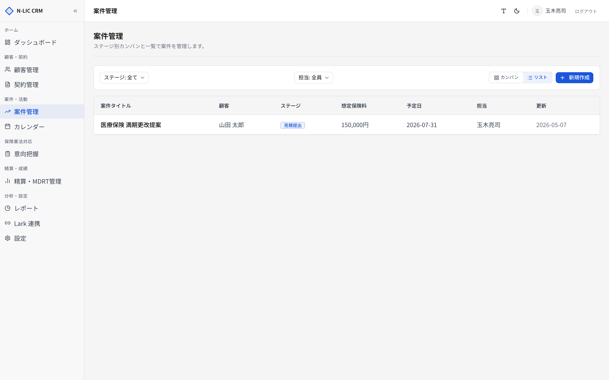
成約・失注も含めて表形式で確認できます。
| 列 | 内容 |
|---|---|
| 案件 | タイトル |
| 顧客 | 顧客名 |
| ステージ | ステージバッジ |
| 想定保険料 | 万円表示 |
| 期日 | 期待クロージング日 |
| 担当 | 担当者 |
| 更新 | 最終更新日 |
案件を新規作成する
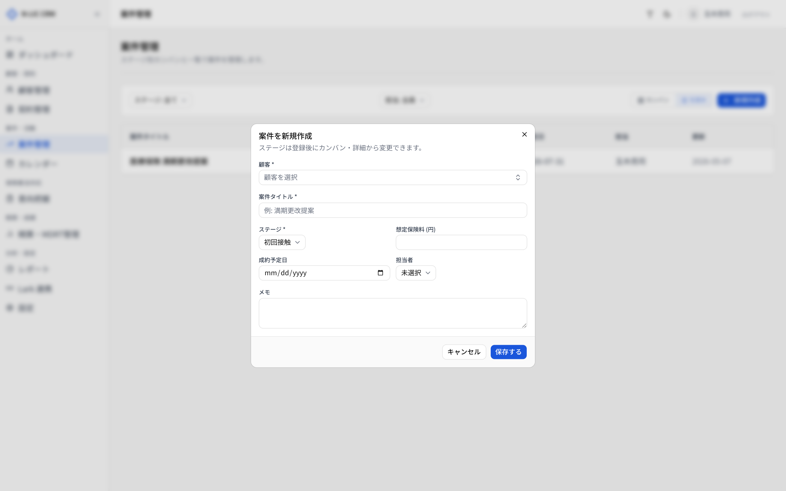
［新規作成］ でモーダルが開きます。
| 項目 | 必須 | 制限 |
|---|---|---|
| 顧客 | ✓ | 既存顧客から選択（コンボボックス検索可） |
| 案件タイトル | ✓ | 100 文字以内 |
| ステージ | ✓ | 上記 7 ステージ |
| 想定保険料 | 月額・年額の単位は運用で統一 | |
| 期待クロージング日 | YYYY-MM-DD | |
| 担当者 | ||
| 備考 | 1000 文字以内 | |
| 失注理由 | ステージが「失注」のときのみ入力可（500 文字以内） |
💡 顧客詳細 → ［案件］ タブ → ［案件を追加］ からは、顧客がプリセットされた状態でモーダルが開きます。
案件詳細
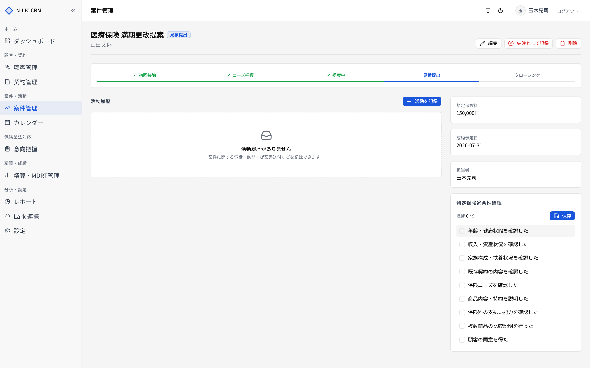
ヘッダーには タイトル / ステージバッジ / 想定保険料 が並びます。
ステージ進行
ステージは 詳細画面のステージピル をクリックして進めます。前のステージに戻すこともできます。
活動履歴タブ
提案活動の経過を時系列で記録します。
| 種別 | 用途 |
|---|---|
| 電話 | 顧客への架電 |
| 訪問 | 対面面談 |
| メール | メール送付・受信 |
| Lark | Lark での連絡 |
| 提案書送付 | 提案書送付の記録 |
| その他 | その他 |
| 項目 | 必須 | 内容 |
|---|---|---|
| 種別 | ✓ | 上記から選択 |
| 内容 | ✓ | 2000 文字以内 |
| 活動日時 | ✓ | YYYY-MM-DDTHH:mm |
活動を入れていくことで、レポート画面で「平均ヒアリング回数」「成約までの活動数」などの分析が可能になります（将来拡張）。
失注処理
ステージを「失注」に変更すると 失注理由 の入力が必須になります。
💡 失注理由はレポートで「失注分析」として再利用できる（将来拡張）。価格 / 商品 / 競合 / タイミング など、定型化して入れる運用を推奨します。
業務フロー例
見込み客の提案案件を成約まで持っていく
- 顧客詳細 → ［案件］ タブ → ［案件を追加］ → タイトル＋ステージ「初回接触」で登録
- ヒアリング後にステージを「ニーズ把握」へ → 活動履歴に記録
- ［提案中］ で提案資料送付 → 活動履歴に「提案書送付」記録
- ［見積提出］ → ［クロージング］ に進める
- 契約締結 → ステージを「成約」へ → 04. 契約管理 で契約を登録
失注のとき
- ステージを「失注」へ
- 失注理由 を記入（必須）
- 顧客のステータスは「休眠」に変更しておくと再アプローチ時に整理しやすい
06. 意向把握（保険業法対応）
保険業法に基づく意向把握記録 を作成・承認・保管します。 当システムの中で コンプライアンス上もっとも重要 な機能です。物理削除は技術的にも禁止されています。
サイドバー ［意向把握］ から開きます。
重要な性質
| 項目 | 内容 |
|---|---|
| 物理削除 | 不可（deleted_at 論理削除のみ。技術担当でも復元できる仕様） |
| 編集 | 承認済の記録は編集不可。差戻し後のみ再編集可 |
| 承認 | 管理者ロールが承認／差戻しを実行 |
| 保管年数 | 設定 > コンプライアンス > data_retention_years で定義（既定 10 年） |
| 監査ログ | 作成・承認・差戻し・編集はすべて audit_logs に記録 |
意向把握 一覧
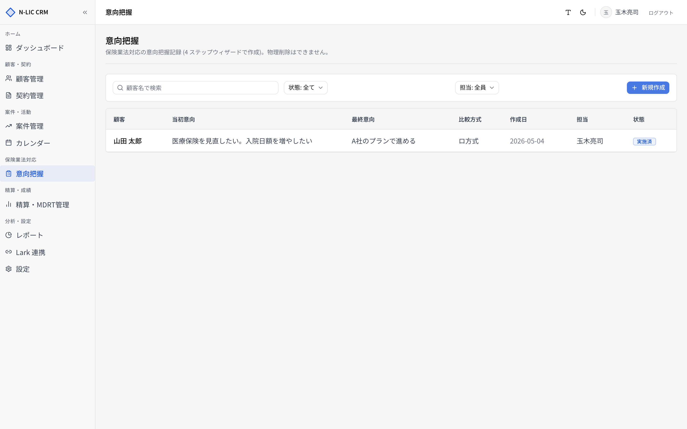
| エリア | 機能 |
|---|---|
| 検索 | 顧客名・契約番号で検索 |
| ステータスフィルター | 未実施 / 実施済 / 承認待 / 承認済 / 差戻 |
| 比較方式フィルター | イ方式 / ロ方式 |
| 担当者フィルター | |
| 右上 ［新規作成］ | 4 ステップウィザードを開始 |
ステータス遷移
未実施 → 実施済 → 承認待 → 承認済
↘ 差戻 → (再編集) → 承認待| ステータス | 意味 |
|---|---|
| 未実施 | 作成中（ウィザード途中保存） |
| 実施済 | 4 ステップ完了。承認に上げる前の状態 |
| 承認待 | 管理者の承認待ち |
| 承認済 | 承認完了。編集不可になる |
| 差戻 | 管理者が差戻し。担当者が修正して再提出可 |
4 ステップウィザード
新規作成は ［新規作成］ で 4 ステップウィザードが開きます。
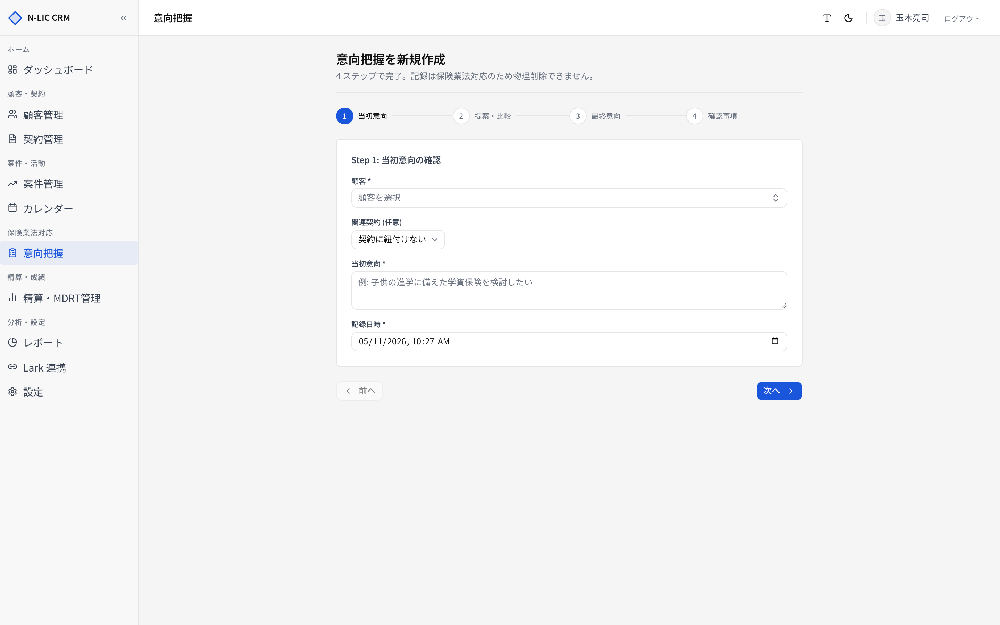
Step 1: 当初意向
| 項目 | 必須 | 内容 |
|---|---|---|
| 顧客 | ✓ | 既存顧客から選択 |
| 関連契約 | 既存契約に紐づける場合 | |
| 当初意向 | ✓ | 2000 文字以内。顧客が最初に表明した意向 |
| 記録日時 | ✓ | 面談日時 |
Step 2: 比較推奨
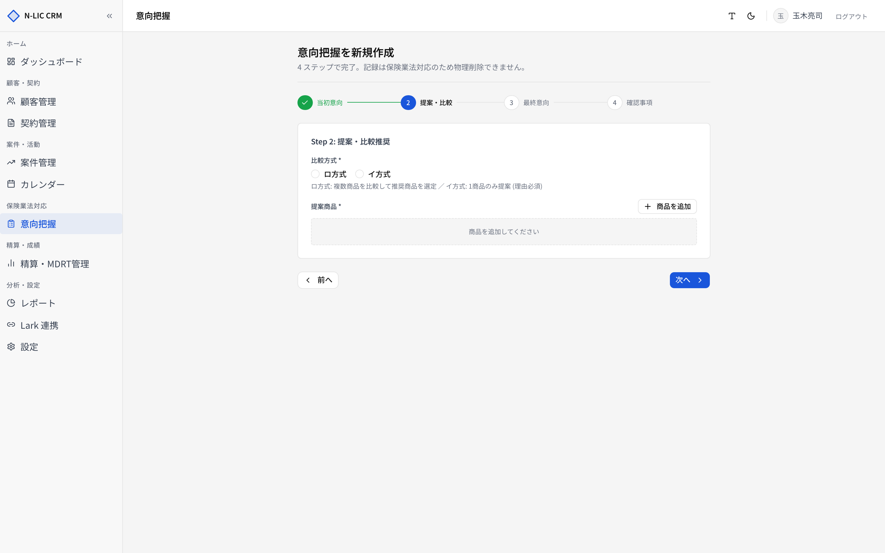
商品を追加すると、商品カードに入力フィールドが展開されます。
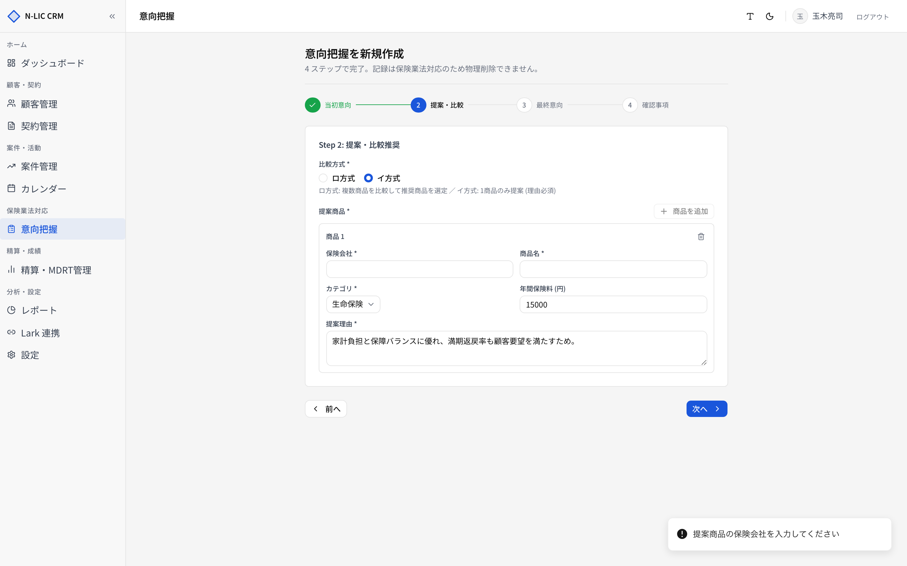
比較方式
| 方式 | 説明 | 商品数 | 推奨商品 | 推奨理由 |
|---|---|---|---|---|
| イ方式 | 単一商品のみを提案 | 1 件のみ | 必須 | 必須 |
| ロ方式 | 複数比較から推奨 | 1 件以上 | 推奨 1 件以上 必須 | 推奨商品ごとに必須 |
商品ごとの項目
| 項目 | 必須 | 制限 |
|---|---|---|
| 保険会社 | ✓ | 100 文字以内 |
| 商品名 | ✓ | 100 文字以内 |
| 商品カテゴリ | ✓ | 生命/損害/医療/介護/年金 |
| 保険料 | ✓ | 0 〜 1 億円 |
| 推奨フラグ | チェック時、推奨理由が必須 | |
| 推奨理由 | 条件次第 | 1000 文字以内 |
Step 3: 最終意向
| 項目 | 必須 | 内容 |
|---|---|---|
| 最終意向 | ✓ | 2000 文字以内 |
| 当初意向との差異メモ | 1000 文字以内。当初と最終で意向が変わった場合に記録 | |
| 記録日時 | ✓ | 最終面談日時 |
Step 4: チェックリスト
保険業法に基づく 9 項目 のチェックリスト。
| # | 項目 | 必須条件 |
|---|---|---|
| 1 | 顧客の意向を正確に把握した | 常時必須 |
| 2 | 商品内容を十分に説明した | 常時必須 |
| 3 | 比較推奨の説明を行った（ロ方式の場合） | ロ方式時のみ必須 |
| 4 | 保険料・保障内容を確認した | 常時必須 |
| 5 | 高齢者対応を実施した（対象者のみ） | 顧客が高齢者の場合のみ必須 |
| 6 | 顧客の署名・同意を得た | 常時必須 |
| 7 | 意向把握書を顧客に交付した | 常時必須 |
| 8 | 控えを保管した | 常時必須 |
| 9 | 次回フォロー日程を設定した | 常時必須 |
Step 4 では電子サイン欄も表示されます。顧客がタッチパネルに直書きした署名画像、署名時点の意向把握内容、チェックリスト、提案商品を証跡 manifest として固定し、SHA-256 とサーバー封印値を保存します。
承認者（管理者）を選択して ［承認に提出］ で 承認待 状態になります。
⚠️ ステップ間は 下書き保存 されます。途中で離脱しても再開できます。
意向把握 詳細
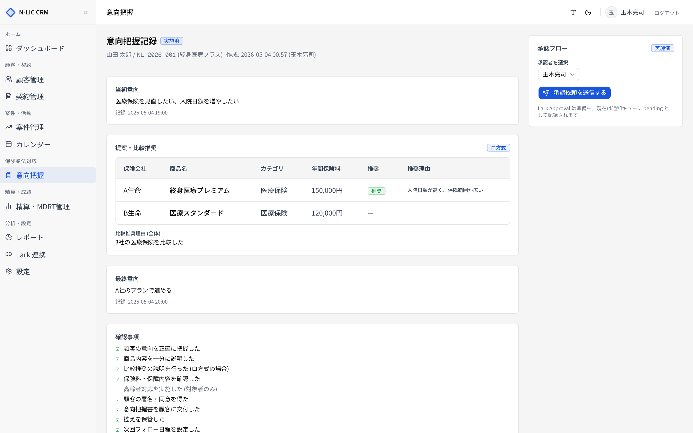
承認待／承認済／差戻 すべての記録を表示します。
承認操作（管理者）
承認待ち状態の記録には ［承認］ と ［差戻し］ ボタンが表示されます。
- ［承認］ → ステータスが
承認済に。以降編集不可。承認ログ（actor / 日時）を記録 - ［差戻し］ → 差戻し理由を入力（必須） → ステータス
差戻に。担当者が修正してから再提出可能
監査履歴
ページ下部に 作成 / 編集 / 承認 / 差戻し の履歴が表示されます。誰がいつ何をしたかが確認できます。
業務フロー例
新規提案 → 意向把握 → 契約までの一連の流れ
- 顧客詳細 → ［案件］ タブから案件を作成（05. 案件管理）
- 提案資料送付後、サイドバー ［意向把握］ → ［新規作成］
- Step 1 で当初意向を記録 → Step 2 で比較方式と提案商品 → Step 3 で最終意向 → Step 4 でチェックリストと承認者選択 → ［承認に提出］
- 管理者が 承認待ち から ［承認］ → 承認済になる
- 承認済の記録に基づき 04. 契約管理 で契約を登録 → 関連意向把握書として自動紐付け
差戻し時
- 管理者が ［差戻し］ + 理由記入
- 担当者は意向把握詳細から ［編集］ → 4 ステップを修正 → 再度 ［承認に提出］
トラブルシュート
| 症状 | 原因 | 対応 |
|---|---|---|
| 「ロ方式では推奨商品を1件以上選び、推奨理由を必ず入力してください」 | 推奨チェックがない/理由が空 | 推奨フラグと理由を入力 |
| 「イ方式では商品を1件のみ提案し...」 | 商品が 0 件 or 2 件以上 | イ方式は厳密に 1 件 |
| 「次回フォロー日程を設定した」がチェックできない | 顧客が高齢者でない場合の高齢者対応項目など、適用外項目はグレーアウト | 該当外項目は無視で可 |
| 承認画面に ［承認］ が出ない | 管理者ロールでない／自分が作成した記録は承認できない（運用統制次第） | 管理者でログインし直す |
📚 法令適用 はリスクが高い領域です。実運用に乗せる前に、社内のコンプライアンス担当と必ずフローを摺り合わせてください。
07. 精算・MDRT 管理
保険会社からの手数料明細（精算データ）を取り込み、月次照合・MDRT 進捗確認・差異検出を行います。 サイドバー ［精算・MDRT管理］ から開きます。
画面構成
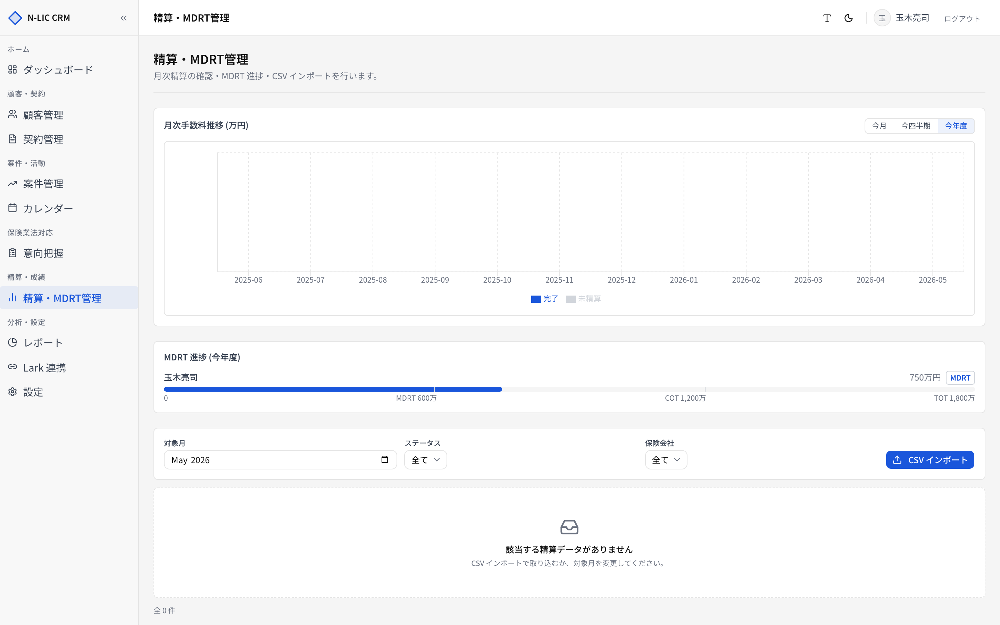
| ブロック | 内容 |
|---|---|
| 上部 | MDRT 進捗（年度累計／目標バー／達成率） |
| 中段 | 月次手数料推移グラフ（過去 12 ヶ月） |
| 下段 | 月次精算明細テーブル＋ CSV インポート |
MDRT 進捗
MDRT（Million Dollar Round Table）の 3 段階目標 に対する進捗を表示します。
| 称号 | 既定の年間目標 | 説明 |
|---|---|---|
| MDRT | 600 万円 | スタンダード |
| COT (Court of the Table) | 1,200 万円 | MDRT の 3 倍水準 |
| TOT (Top of the Table) | 1,800 万円 | MDRT の 6 倍水準 |
💡 目標値は
mdrt_targetsテーブルで年度ごとに管理されます。年度初めに管理者が更新できる UI を将来追加予定です（現状は技術担当が SQL で初期化）。
担当者ごとに 実績／目標バー が表示されます。
月次精算
月を切り替える
画面中央の月セレクタで対象月を変更します。URL クエリは ?month=YYYY-MM。
一覧の項目
| 列 | 内容 |
|---|---|
| 証券番号 | 契約の証券番号 |
| 顧客名 | CSV 上の契約者名 |
| 保険会社 | 引受会社 |
| 計上月 | YYYY-MM |
| 請求額 | 保険会社請求 |
| 入金額 | 実入金 |
| 手数料額 | 代理店受取手数料 |
| 手数料率 | (任意) |
| 状態 | 未精算 / 照合中 / 完了 / 差異あり |
ステータス
| ステータス | 意味 |
|---|---|
| 未精算 | CSV 取り込み直後の初期状態 |
| 照合中 | 担当者が確認作業中 |
| 完了 | 入金と一致し、精算完了 |
| 差異あり | 請求額・入金額・手数料額に齟齬がある |
差異ありの行は 赤色 で強調表示されます。
CSV インポート
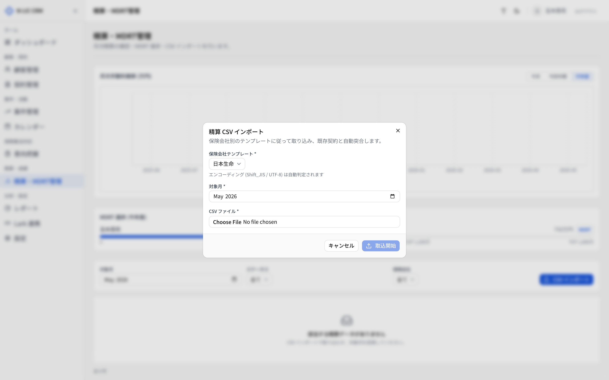
各保険会社の CSV テンプレートに合わせて、明細データを取り込めます。
対応保険会社（暫定）
- 日本生命（Shift_JIS）
- 東京海上日動（UTF-8）
- アフラック（Shift_JIS）
- 第一生命 / 損保ジャパン など（順次追加予定）
⚠️ 列名と文字コードは保険会社ごとに異なります。テンプレートは
src/lib/settlement/csvTemplates.tsで集中管理されています。新しい保険会社を追加する場合は、技術担当に依頼してください。
取り込み手順
- ［CSV インポート］ → 取り込みたい保険会社を選択
- ファイル選択画面で CSV をアップロード
- プレビュー で列マッピング・行件数を確認
- ［確定］ で
settlementsテーブルに登録 - 失敗行は
settlement_importsテーブルに記録（後追い修正可能）
重複検知
同じ 証券番号 + 計上月 の行が既存にある場合：
- 完全一致 → スキップ
- 金額違い → 差異あり ステータスで上書き登録（旧データは履歴として保持）
月次推移チャート
過去 12 ヶ月の手数料合計を棒グラフで表示します。状態（完了 / 差異あり / 未精算）で色分けされ、ステータスの累積も把握できます。
業務フロー例
月初の精算作業
- ［精算・MDRT管理］ を開き、対象月を当月に設定
- ［CSV インポート］ → 保険会社ごとに CSV をアップロード
- 差異あり の行を順に開き、保険会社に確認
- 確認済みの行は ［完了］ にステータス変更
- MDRT 進捗バーを確認、目標との乖離を共有
担当者の MDRT 進捗確認
- 上部 MDRT 進捗ブロックで担当別バーを確認
- 達成見込みの低い担当者にフォロー
- レポート画面（09. レポート）と組み合わせて月次計画を立案
トラブルシュート
| 症状 | 原因 | 対応 |
|---|---|---|
| CSV 取り込み時に文字化け | 文字コード設定が違う | 保険会社テンプレートと一致しているか確認 |
| 差異あり が大量に出る | 取り込んだ月と CSV の計上月がずれている | 上部の月セレクタが正しいか確認 |
| MDRT 目標値が古い | mdrt_targets の年度設定が未更新 | 技術担当に年度更新を依頼 |
08. カレンダー
顧客訪問・電話・社内会議など、業務予定を月／週ビューで管理します。 サイドバー ［カレンダー］ から開きます。
画面構成
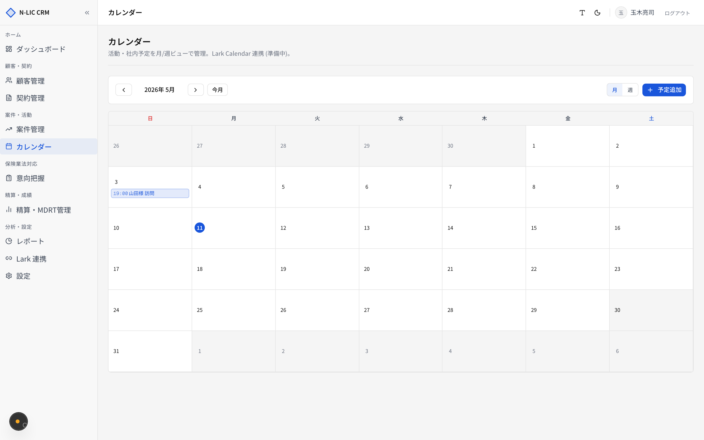
| エリア | 機能 |
|---|---|
| 上部ナビ | ◀ / 今日 / ▶ で月（または週）を移動 |
| ビュー切替 | ［月］ / ［週］ |
| 右上 ［新規予定］ | 予定登録モーダル |
URL クエリで状態を保持：?year=2026&month=5&view=month。ブックマークで特定月を保存できます。
イベント種別
| 種別 | 用途 |
|---|---|
| 訪問 | 顧客先への訪問 |
| 電話 | 電話面談 |
| Web会議 | オンライン面談 |
| 書類作業 | 申込書・更改書類作成 |
| 社内会議 | 朝礼・打ち合わせ |
| 研修 | 社内外研修 |
| その他 |
種別ごとに 色 が変わります（G-DX デザイントークン準拠）。
月ビュー
各セルにその日の予定が積み上がります。1 セルあたり最大表示は概ね 3 件。 セルをクリックすると、その日に新規予定を作成するモーダルが開きます。
予定をクリックすると 右側サイドパネル が開き、詳細を表示・編集できます。
週ビュー
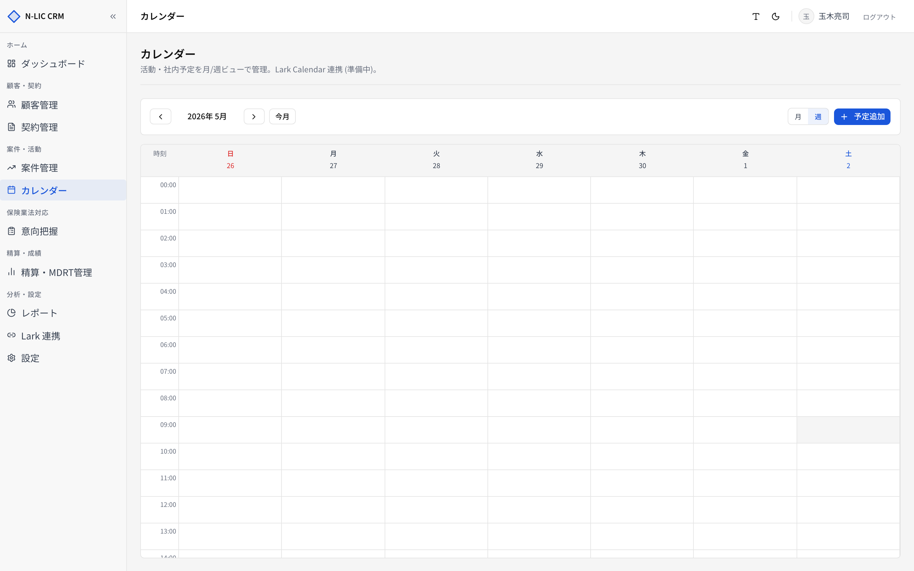
時間軸（0:00 〜 24:00）を縦に表示。予定の長さは時間に応じて伸びます。 ドラッグで予定の開始・終了を変更できます（現状はモーダル経由の編集を推奨）。
予定を登録する
［新規予定］ または日付セルクリックでモーダルが開きます。
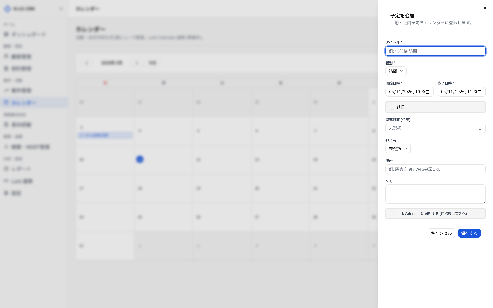
入力項目
| 項目 | 必須 | 制限 |
|---|---|---|
| タイトル | ✓ | 100 文字以内 |
| 種別 | ✓ | 上記 7 種から選択 |
| 開始日時 | ✓ | YYYY-MM-DDTHH:mm |
| 終了日時 | ✓ | 開始日時以降 |
| 終日フラグ | 終日予定にする場合 | |
| 関連顧客 | 顧客を紐付け（後で顧客ページから参照可能） | |
| 関連案件 | 案件を紐付け | |
| 担当者 | ||
| 場所 | 200 文字以内 | |
| メモ | 2000 文字以内 |
⚠️ 終了日時 < 開始日時 は登録不可。
サイドパネル
予定をクリックして開く詳細パネル。
| エリア | 内容 |
|---|---|
| ヘッダー | タイトル + 種別バッジ |
| 詳細 | 日時、場所、関連顧客／案件 |
| メモ | 自由記述 |
| 操作 | 編集 / 削除 |
Lark Calendar 連携（準備中）
12. Lark 連携 > Calendar タブで calendar_id を設定すると、HOKENA CRM の予定が Lark Calendar へ自動同期されます（実装は準備中）。
業務フロー例
顧客訪問の予定管理
- 顧客詳細 → ［対応履歴を追加］ で次回アクションを
2026-05-20で記録 - サイドバー ［カレンダー］ → 該当日付セル → ［新規予定］
- 種別「訪問」、関連顧客を紐付け、場所を入力
- 翌週はじめに週ビューで予定一覧を確認、訪問前に 顧客詳細 で過去履歴を再確認
トラブルシュート
| 症状 | 原因 | 対応 |
|---|---|---|
| 予定が他人のと同じ色 | 種別ごとの色分けで、担当者別の色分けは現状なし | 担当者でフィルター（将来実装予定） |
| 月をまたぐ予定が片方にしか表示されない | 月単位で取得しているため | 開始日が表示中の月にある月で確認 |
| Web会議 URL が入らない | 専用フィールド未実装、メモ欄に貼ってください | 運用回避 |
09. レポート
代理店全体の業績・顧客構成を 4 つの観点で可視化します。 サイドバー ［レポート］ から開きます。
画面構成
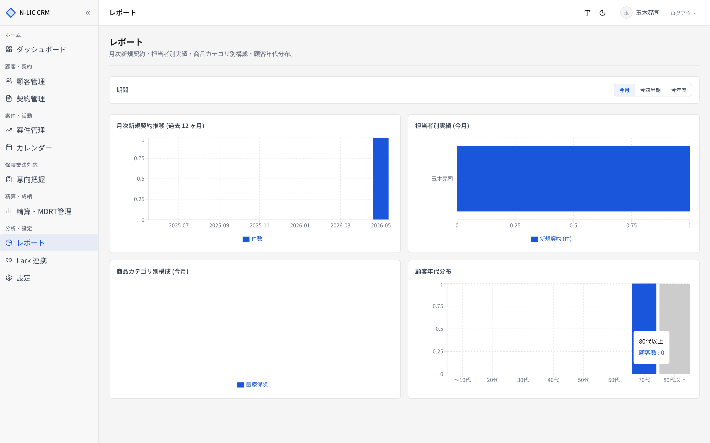
| ブロック | グラフ | 集計対象 |
|---|---|---|
| ① 月次新規契約推移 | 棒グラフ | 過去 12 ヶ月（期間設定の影響なし） |
| ② 担当者別実績 | 横棒グラフ | 期間設定に依存 |
| ③ 商品カテゴリ別構成 | 円グラフ + 表 | 期間設定に依存 |
| ④ 顧客年代分布 | 棒グラフ | 全顧客（期間に依存しない） |
期間切替
画面右上で集計期間を切り替えます。
| ボタン | 範囲 |
|---|---|
| 今月 | 当月の 1 日〜今日 |
| 今四半期 | 当四半期の開始〜今日 |
| 今年度 | 当年の 1 月 1 日〜今日 |
URL クエリ ?period=this_month / this_quarter / this_year。ブックマーク可。
各グラフの読み方
① 月次新規契約推移
過去 12 ヶ月の 新規契約件数 を月単位で表示。トレンド把握用。
💡 件数だけでなく 保険料合計 をマウスオーバーで確認できます。
② 担当者別実績
期間内に 登録された契約 を担当者ごとに集計。
| 列 / 棒 | 内容 |
|---|---|
| 件数 | 担当した契約の件数 |
| 保険料合計 | 同期間の保険料総額 |
降順で並び、件数の多い担当者が上に表示されます。未割当の契約は「未割当」としてまとめられます。
③ 商品カテゴリ別構成
| カテゴリ | |---| | 生命保険 | | 損害保険 | | 医療保険 | | 介護保険 | | 年金保険 |
円グラフ＋表で 件数 / 保険料合計 / 占有率 を表示。代理店の商品構成バランスを把握できます。
④ 顧客年代分布
顧客マスタの生年月日から自動算出 (customers_with_age ビュー) し、以下の年代区分で集計。
| バケット | |---| | 〜10代 / 20代 / 30代 / 40代 / 50代 / 60代 / 70代 / 80代以上 |
💡 高齢者対応が必要な顧客の割合を可視化するのに有用。70 代以上の比率が大きい代理店は、コンプライアンス強化や家族同席運用を検討。
CSV エクスポート（将来）
現状はグラフ閲覧のみ。CSV / PDF エクスポートは将来追加予定です。
業務フロー例
月次定例での振り返り
- 期間を 今月 に設定
- 担当者別実績で個別バランスを確認
- カテゴリ別構成で偏りを確認（例：生命保険ばかり → 損保提案を強化）
- 月次推移と組み合わせて、年間目標との乖離を見る
MDRT 期初目標の設定
- 期間を 今年度 に設定
- 担当者別保険料合計の上位を把握 → MDRT 達成圏内を確認
- 07. 精算・MDRT 管理 と組み合わせて目標値を逆算
注意点
- レポートは 論理削除されていない契約 のみを対象にします。削除済み契約は集計対象外。
- データのリアルタイム性は 数秒 程度（Server Components の SSR）。直近に登録した契約はリロードで反映されます。
- 期間集計の境界は 契約の
created_at（登録日）です。契約開始日 (start_date) ではない点に注意。
10. ダッシュボード
ログイン後の最初の画面。代理店全体の 健全性 / 注意すべき契約 を一覧できます。 サイドバー ［ダッシュボード］ から開きます。
画面構成
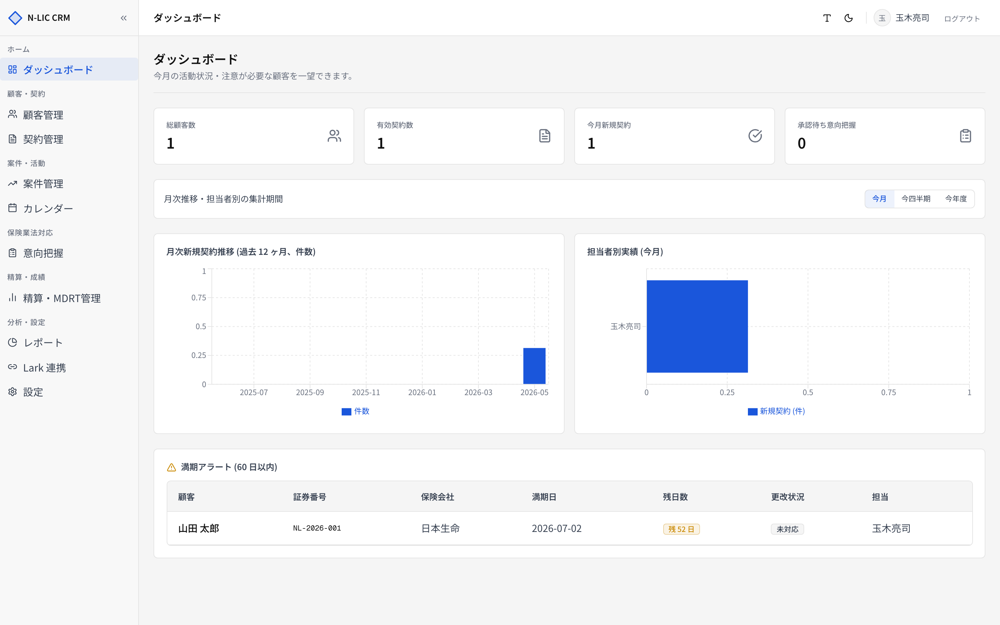
| ブロック | 内容 |
|---|---|
| ① KPI カード × 4 | 総顧客数 / 有効契約数 / 今月新規契約 / 承認待ち意向把握 |
| ② 期間フィルター | 月次推移／担当者別実績の集計期間 |
| ③ 月次新規契約推移 | 過去 12 ヶ月 |
| ④ 担当者別実績 | 期間設定に依存 |
| ⑤ 満期アラート | 60 日以内に満期の有効契約 |
KPI カード
| カード | 集計 | リンク先 |
|---|---|---|
| 総顧客数 | 削除されていない顧客 | ［顧客管理］ |
| 有効契約数 | status='有効' の契約 | ［契約管理］ (?status=有効) |
| 今月新規契約 | 当月作成の契約 | ［契約管理］ |
| 承認待ち意向把握 | 承認待 ステータスの記録（あれば 黄色強調） | ［意向把握］ (?status=承認待) |
カードをクリックすると、関連画面へフィルター付きで遷移します。
期間フィルター
3 つのプリセット：
| ボタン | 範囲 |
|---|---|
| 今月 | 当月の 1 日〜今日 |
| 今四半期 | 当四半期の開始〜今日 |
| 今年度 | 当年の 1 月 1 日〜今日 |
URL クエリ ?period=this_month 等で保持。
月次新規契約推移
過去 12 ヶ月の 新規契約件数 を棒グラフで表示します（期間フィルターの影響なし）。 レポート画面の同名グラフと同じデータ。
担当者別実績
期間内の 新規契約数 を担当者ごとに集計します。 件数の多い担当者から横棒で表示。
満期アラート
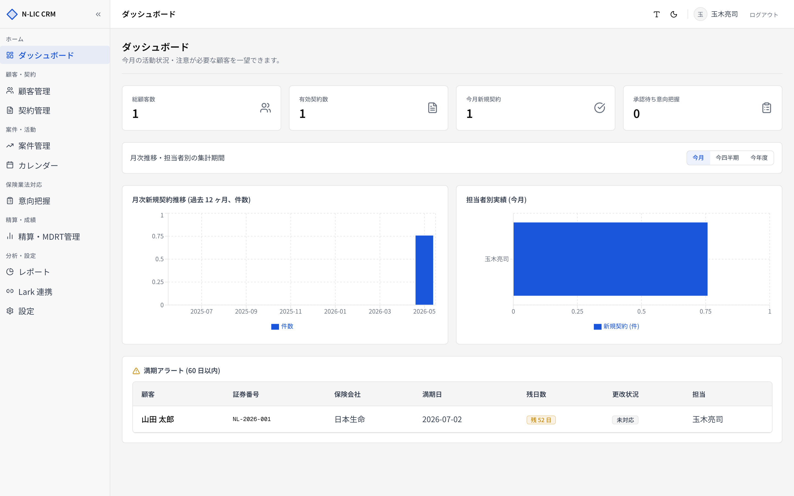
60 日以内 に満期を迎える 有効 契約を一覧します。
| 列 | 内容 |
|---|---|
| 顧客 | 顧客名 |
| 証券番号 | |
| 保険会社 | |
| 満期日 | YYYY-MM-DD |
| 残日数 | 0 〜 60 日 (バッジ色：30 日以下で赤、60 日以下で黄) |
| 更改状況 | 未対応 / 対応中 等のバッジ |
| 担当 | 担当者氏名 |
行クリックで契約詳細へ移動。
業務フロー例
朝のチェックインルーチン
- ダッシュボード を開く
- 承認待ち意向把握 が 0 でなければ確認・承認
- 満期アラート を上から処理（残日数が少ない順）
- 期間を「今月」に設定し、担当者別実績を確認
月次定例（管理者）
- 期間を 今年度 に設定
- 月次推移と担当者別実績を確認
- 詳細分析は 09. レポート へ
注意点
- ダッシュボードは テナント単位 で表示されます。他代理店のデータは見えません（RLS で制御）。
- 担当者ロール (
agent) でログインした場合、KPI と満期アラートは 自分の担当分のみ を表示する仕様への拡張余地あり（現状は全件表示）。 - データは Server Components で SSR されるため、ページリロードで最新化されます。
11. 設定
代理店情報、ユーザー管理、通知、コンプライアンス設定。 サイドバー ［設定］ から開きます。 管理者ロール (
admin) のみ編集可能。それ以外のロールは閲覧のみ（フィールドはグレーアウト）。
タブ構成
| タブ | 内容 | 操作 |
|---|---|---|
| 代理店情報 | 代理店名・代表者・住所・連絡先・登録番号 | admin のみ編集可 |
| ユーザー管理 | アカウント招待、ロール変更、有効/無効 | admin のみ操作可 |
| 通知設定 | 満期アラート日数、通知方法 | admin のみ編集可 |
| コンプライアンス | 高齢者閾値、意向把握必須化、データ保持年数 | admin のみ編集可 |
代理店情報
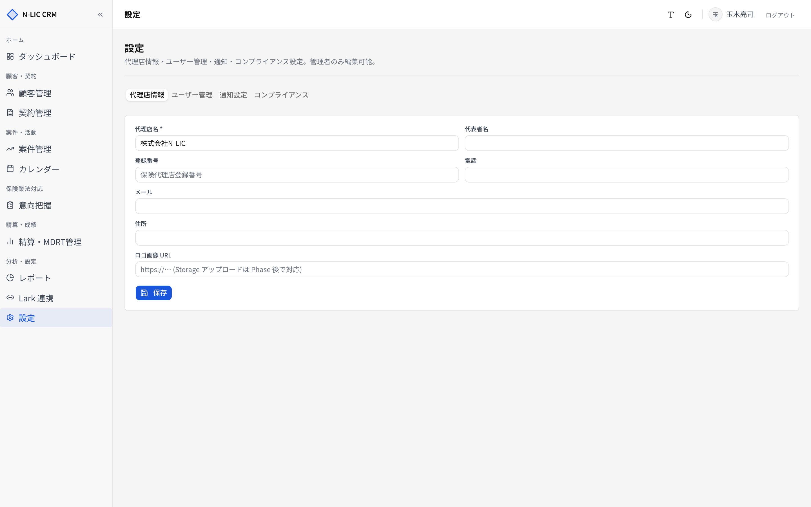
| 項目 | 必須 | 説明 |
|---|---|---|
| 代理店名 | ✓ | 100 文字以内。保存すると tenants.name も同期 |
| 代表者名 | 50 文字以内 | |
| 住所 | 200 文字以内 | |
| 電話番号 | 数字／- + ( ) のみ、30 文字以内 | |
| メールアドレス | RFC 準拠 | |
| 登録番号 | 50 文字以内（保険代理店登録番号） | |
| ロゴ URL | URL 形式（ヘッダー・印刷物で利用予定） |
ユーザー管理
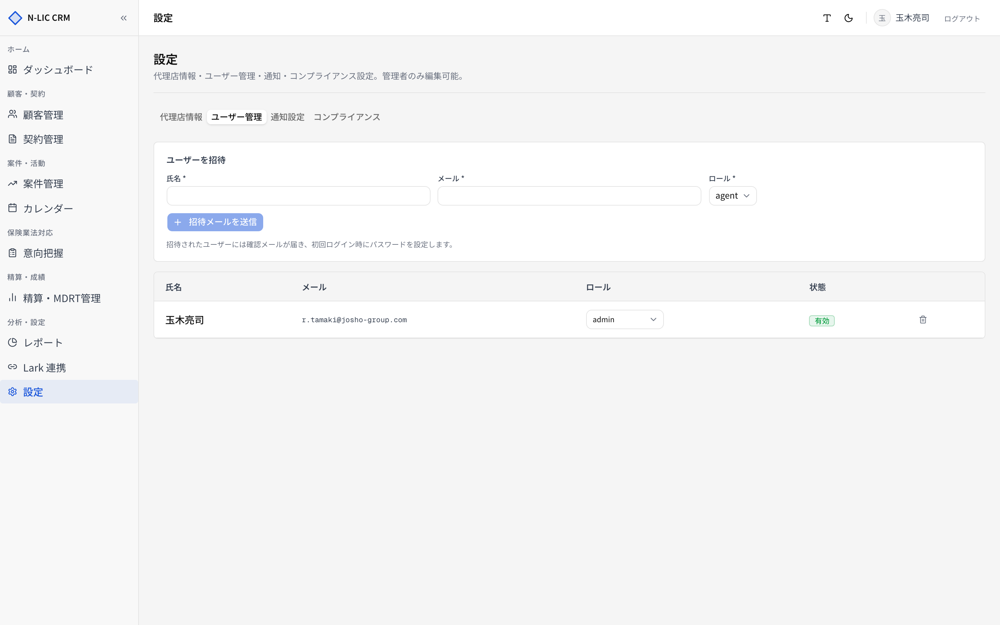
一覧
| 列 | 内容 |
|---|---|
| 氏名 | |
| メールアドレス | ログイン ID として利用 |
| ロール | admin / agent / staff |
| 部署 | (任意) |
| ステータス | 有効 / 無効 |
ユーザー招待
［ユーザーを招待］ ボタンから招待モーダルを開きます。
| 項目 | 必須 | 内容 |
|---|---|---|
| メールアドレス | ✓ | RFC 準拠 |
| 氏名 | ✓ | 50 文字以内 |
| ロール | ✓ | admin / agent / staff |
招待の挙動
- Supabase Auth に 招待メール送信（
auth.usersに行が作成される） user_profilesに同 ID で行を作成（ロール・テナント所属を設定）- 招待されたユーザーはメール内リンクからパスワード設定 → ログイン可能
| ロール | 主な権限 |
|---|---|
| admin | 設定変更・ユーザー招待・意向把握の承認・Lark 連携設定 |
| agent | 担当顧客・契約・案件の登録／編集／意向把握作成 |
| staff | 顧客・契約の検索／登録／編集。意向把握の承認は不可 |
ロール変更
ユーザー行右側の ロール ドロップダウン から変更します。即時反映。
アカウント無効化
ユーザー行右側の ［無効化］ で is_active=false。再有効化は ［有効化］ で。
⚠️ 無効化されたユーザーは： - ログイン不可 - 顧客・契約の担当者選択肢から除外 - 過去の担当履歴・対応履歴はそのまま残る
通知設定
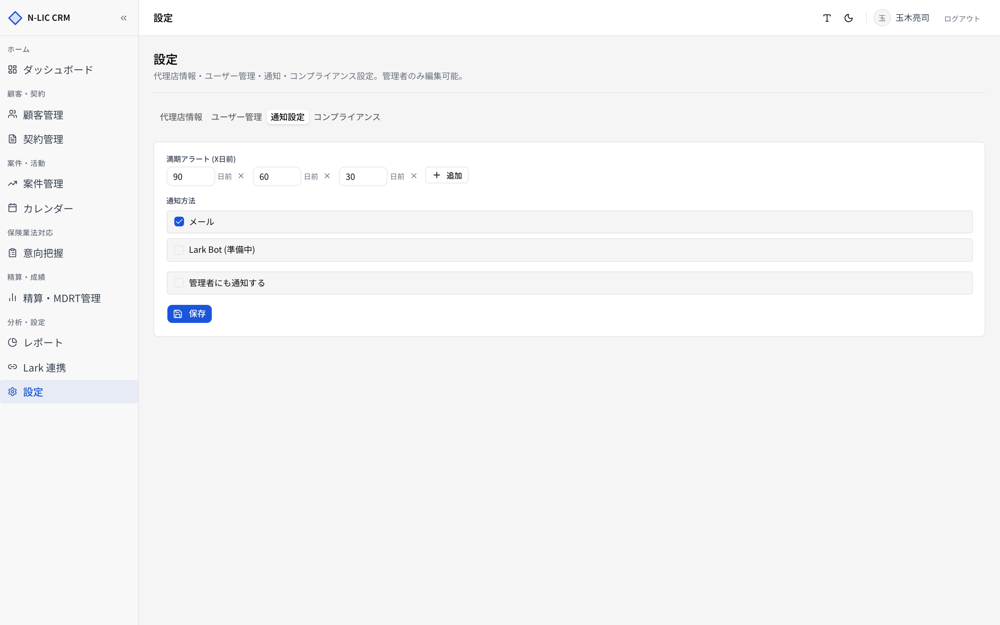
満期アラート
満期 X 日前にアラートを通知。複数日数を設定可能。
| 項目 | 既定値 | 制限 |
|---|---|---|
| 満期アラート (X日前) | 90 / 60 / 30 | 1〜5 個、0〜365 |
通知方法
| 項目 | 内容 |
|---|---|
| メール | システムからメール送信（実装は順次） |
| Lark Bot | Lark チャットへ Bot 通知（12. Lark 連携 参照、準備中） |
| 管理者にも通知 | 担当者だけでなく管理者にも CC で通知 |
コンプライアンス
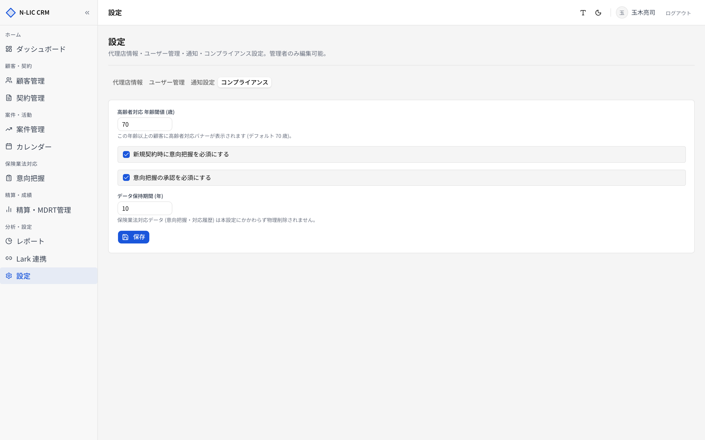
| 項目 | 既定 | 内容 |
|---|---|---|
| 高齢者の年齢閾値 | 70 | この年齢以上の顧客は 高齢者 フラグが立つ。意向把握で追加チェックが必須に |
| 新規契約に意向把握書を必須化 | ON | OFF にすると契約登録時の意向把握書 ID 確認をスキップ（コンプラ的に非推奨） |
| 意向把握書の承認を必須化 | ON | OFF にするとフォースで承認なしでも契約紐付け可（コンプラ的に非推奨） |
| データ保持年数 | 10 | 削除済みデータの保持期間。年数超過後は技術担当による物理削除可 |
⚠️ コンプライアンス設定の 「意向把握書を必須化」 を OFF にすると、保険業法対応の証跡が欠落する可能性があります。法令確認の上、明確な根拠なしには変更しないでください。
業務フロー例
新しいスタッフを迎え入れる
- ［ユーザー管理］ タブ → ［ユーザーを招待］
- メールアドレス・氏名・ロール（staff）を入力 → 招待送信
- スタッフがメール内リンクからパスワード設定
- ログイン → 顧客・契約の登録作業を開始
高齢者基準の見直し
- 監督官庁ガイドラインに合わせて閾値を変更（例: 70 → 65）
- ［コンプライアンス］ → 高齢者年齢閾値を
65に変更 → 保存 customers_with_ageビュー経由で全顧客のis_elderlyフラグが即時更新される- 該当顧客の意向把握では高齢者対応チェックリストが必須に
トラブルシュート
| 症状 | 原因 | 対応 |
|---|---|---|
| フィールドが編集できない | admin ロールでない | admin に依頼、または自分が admin か確認 |
| 招待メールが届かない | スパム判定／メールアドレス誤り | スパムフォルダ確認、メアドを再確認 |
| ロール変更が反映されない | キャッシュ／セッション | ユーザーに再ログインを依頼 |
12. Lark 連携
Lark（飛書）の各種サービスと HOKENA CRM を連携させる設定画面。 サイドバー ［Lark 連携］ から開きます。
⚠️ 現在、実際の Lark API 連携は段階的に実装中 です。設定 UI と DB 保存は完成していますが、同期・通知の実 API 呼び出しは順次有効化されます。
接続状態サマリー

ページ最上部に 接続状態カード が並びます。
| 項目 | 設定箇所 |
|---|---|
| App ID | 環境変数 LARK_APP_ID |
| App Secret | 環境変数 LARK_APP_SECRET |
| Webhook Token | 環境変数 LARK_WEBHOOK_VERIFY_TOKEN |
| Lark Base | base.base_id |
| Lark Calendar | calendar.calendar_id |
| Approval Flow | approval.intention_flow_id |
| Bot Chat | bot.alert_chat_id |
「接続済」「未接続」のバッジで一目で状況がわかります。
タブ構成
| タブ | 内容 |
|---|---|
| SSO | Lark OAuth でのシングルサインオン設定 |
| Base | Lark Base との顧客／契約／案件の双方向同期 |
| Calendar | 予定の Lark Calendar 同期 |
| Approval | 意向把握の Lark 承認フロー連携 |
| Bot | 通知 Bot のチャット設定 |
| 通知テンプレ | 各通知文面のテンプレート編集 |
SSO（シングルサインオン）
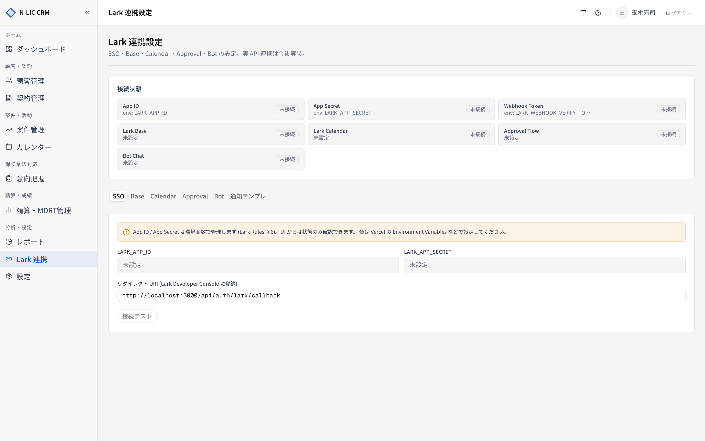
Lark Developer Console でアプリ登録した上で、以下を設定します。
| 項目 | 設定場所 | 説明 |
|---|---|---|
LARK_APP_ID | 環境変数 | Lark アプリの App ID |
LARK_APP_SECRET | 環境変数 | Lark アプリの App Secret |
| リダイレクト URI | 表示のみ（コピー用） | これを Lark Developer Console に登録 |
⚠️ App Secret は環境変数管理（Lark Rules §6）。UI から直接編集はできません。Vercel の Environment Variables などで設定してください。
［接続テスト］ で疎通確認が行えます（実 API 連携後）。
Base
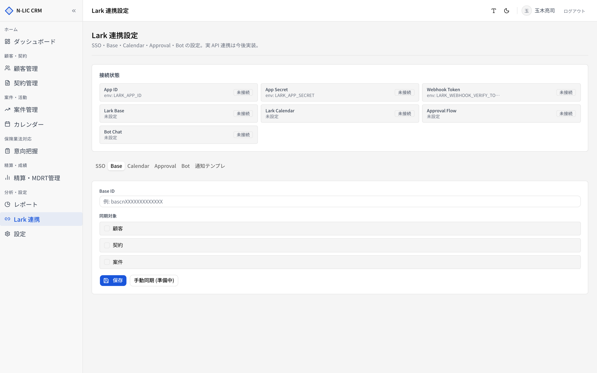
Lark Base（飛書ベース）と顧客・契約・案件を同期します。
| 項目 | 設定 |
|---|---|
| Base ID | bascnXXXXXXXXXXX 形式 |
| 同期対象 | 顧客 / 契約 / 案件 のチェック |
［手動同期］ ボタンで強制同期（実 API 連携後）。
Calendar
| 項目 | 設定 |
|---|---|
| Calendar ID | Lark カレンダー ID |
| 同期対象 | カレンダーイベント |
HOKENA CRM のカレンダー予定が、Lark Calendar に自動で双方向同期されます（08. カレンダー 参照）。
Approval（承認フロー）
| 項目 | 設定 |
|---|---|
| 意向把握用 承認フロー ID | APPROVAL_FLOW_XXXXX |
意向把握の承認時に Lark の承認フローを起動します（06. 意向把握 参照）。
Bot
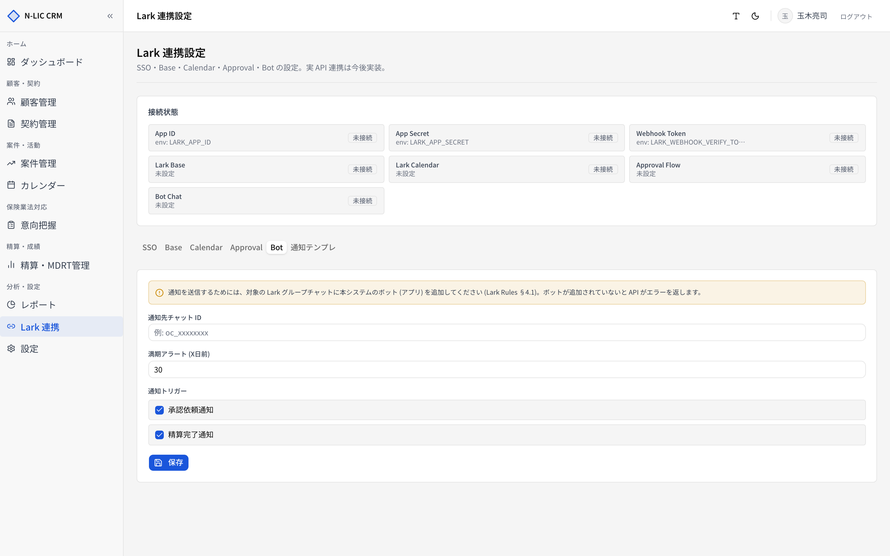
通知 Bot のチャット設定。
| 項目 | 設定 |
|---|---|
| 通知先チャット ID | oc_xxxxxxxx 形式 |
| 満期アラート (X日前) | 数値 |
| 通知トリガー | 承認依頼 / 精算完了 |
⚠️ 重要: 通知を送るには、対象の Lark グループチャットに 本システムのボット (アプリ) を追加 する必要があります（Lark Rules §4.1）。ボットがチャットに追加されていないと API がエラーを返します。
通知テンプレート
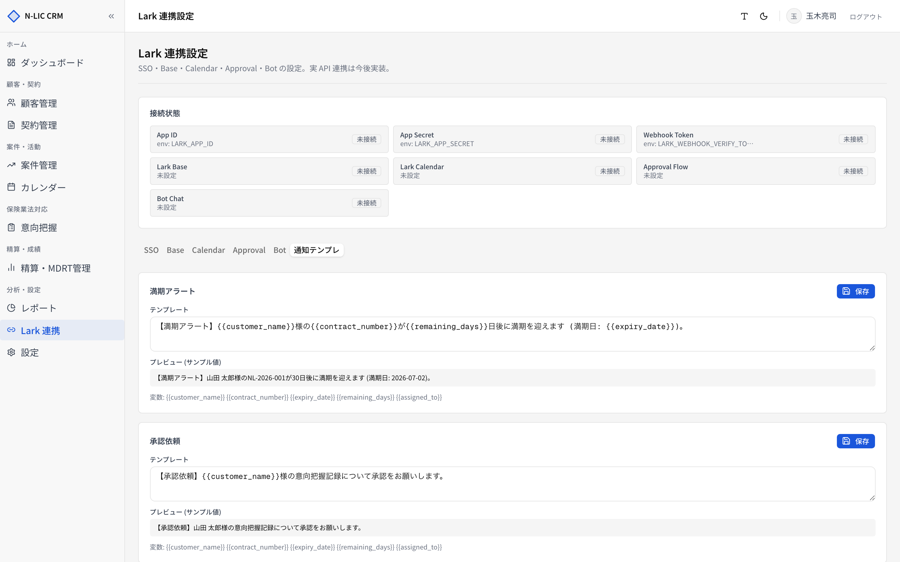
Lark Bot から送る通知文面を、テンプレートとして編集できます。
| テンプレートキー | 用途 |
|---|---|
| 満期アラート | 満期 X 日前の通知 |
| 承認依頼 | 意向把握書の承認待ち通知 |
| 精算完了 | 月次精算完了通知 |
使える変数
| 変数 | 例 |
|---|---|
{{customer_name}} | 山田 太郎 |
{{contract_number}} | NL-2026-001 |
{{expiry_date}} | 2026-07-02 |
{{remaining_days}} | 30 |
{{assigned_to}} | 玉木亮司 |
リアルタイムプレビューでサンプル値を埋め込んだ文面を確認できます。
環境変数
Lark 連携で利用する環境変数一覧。
| 変数 | 用途 | 推奨設定場所 |
|---|---|---|
LARK_APP_ID | App ID | Vercel Production / Preview |
LARK_APP_SECRET | App Secret（秘匿） | Vercel Production / Preview, Sensitive |
LARK_OAUTH_REDIRECT_URI | OAuth リダイレクト URI | Production 環境ごとに切り分け |
LARK_WEBHOOK_VERIFY_TOKEN | Webhook 検証トークン | Sensitive |
初期セットアップ手順
- Lark Developer Console でアプリ作成
- アプリの App ID / App Secret を取得 → Vercel の Environment Variables に登録
- リダイレクト URI を Console に登録（［SSO］ タブで表示される URL をコピー）
- アプリに必要な権限スコープを付与（ベース・カレンダー・チャット・承認）
- HOKENA CRM の ［Lark 連携］ で各タブの ID を入力
- Bot を通知先チャットに招待
- ［接続テスト］ で疎通確認
トラブルシュート
| 症状 | 原因 | 対応 |
|---|---|---|
| 「Lark アカウントでログイン」が押せない | App ID/Secret 未設定 | 環境変数を Vercel に登録、再デプロイ |
| 通知が届かない | チャットに Bot 未追加 | Lark 上で Bot をチャットに招待 |
| Base 同期が反映されない | Base ID 誤り／権限不足 | Console で権限スコープを再確認 |
| 承認フローが起動しない | フロー ID 誤り | Lark Approval の URL から ID を再取得 |
13. 管理者運用
管理者ロール (
admin) が日常的に行う、現場では直接見えないオペレーションをまとめます。
日常運用カレンダー
| 頻度 | 作業 | 画面 |
|---|---|---|
| 毎朝 | ダッシュボードで「承認待ち意向把握」「満期アラート」を確認 | 10. ダッシュボード |
| 毎週 | レポート画面で担当者別実績を確認 | 09. レポート |
| 毎月初 | 月次精算 CSV を取り込み・照合 | 07. 精算・MDRT 管理 |
| 毎月末 | MDRT 進捗を確認、達成見込みの低い担当者をフォロー | 07. 精算・MDRT 管理 |
| 不定期 | 意向把握書の承認 | 06. 意向把握 |
| 不定期 | ユーザー招待・ロール変更 | 11. 設定 |
ユーザー管理
新しいスタッフを迎え入れる
- ［設定］ → ［ユーザー管理］ タブ → ［ユーザーを招待］
- メールアドレス、氏名、ロールを入力 → 招待送信
- スタッフがメール内リンクをクリック → パスワード設定
- ログイン → 担当者として顧客・契約に紐付け可能
スタッフが退職する
- ［設定］ → ［ユーザー管理］ → 該当ユーザー行 → ［無効化］
- ログイン不可、担当選択肢から除外
- 過去の対応履歴・担当履歴・監査ログは残ります
⚠️ 「物理削除」はできません。退職者の アカウント削除 ではなく、必ず「無効化」で対応してください。データの整合性が保たれます。
ロール変更
ロールはいつでも変更可能：
| 変更 | 影響 |
|---|---|
| staff → agent | 自分が担当する顧客に対する意向把握作成権限を付与 |
| agent → admin | すべての画面で編集可能、設定変更権限を付与 |
| admin → staff | 設定画面から弾かれる、意向把握の承認権限を失う |
⚠️ 最後の管理者 を staff に降格しないでください。設定画面・Lark 連携が誰も操作できなくなります。最低 1 名は admin を維持してください。
パスワード再発行
利用者からの依頼ベース：
- 管理者は Supabase ダッシュボード → Authentication → Users で該当ユーザーを検索
- ［Send password reset email］ で再発行メールを送る
- または Supabase の SQL Editor から
auth.admin.generate_linkを実行
💡 アプリ内に「パスワードリセット」ボタンを置く UI は将来追加予定です。
バックアップとリストア
バックアップ
Supabase のマネージドバックアップに依存します。
| 種別 | 頻度 | 保持期間 |
|---|---|---|
| 自動日次バックアップ | 毎日 | 7 日（Free プラン）／ 14〜28 日（Pro 以上） |
| 手動 PITR | 必要時 | プランによる |
詳細は Supabase Dashboard → Database → Backups を参照。
復元
- Supabase Dashboard → Backups → 該当時点を選択
- ［Restore］ で復元（注意：DB 全体が巻き戻る）
- 部分復元（特定テーブルのみ）はサポート外。SQL での手動復元が必要
⚠️ 復元は本番影響が大きいため、必ずメンテナンス時間を取り、利用者全員に周知してください。
監査ログ
audit_logs テーブルに以下が記録されます：
| 記録される操作 | |---| | 顧客・契約・案件・意向把握の作成／編集／削除 | | ユーザーの招待／ロール変更／無効化 | | Lark 連携設定の変更 | | ログイン／ログアウト | | 意向把握の承認／差戻し |
監査ログ閲覧 UI（将来）
現状、監査ログ閲覧 UI は未実装です。SQL で確認します：
SELECT
al.created_at,
up.name AS actor,
al.action,
al.target_type,
al.target_id,
al.changes
FROM audit_logs al
LEFT JOIN user_profiles up ON up.id = al.actor_id
WHERE al.tenant_id = '<tenant_id>'
ORDER BY al.created_at DESC
LIMIT 100;詳細は 14. セキュリティ を参照。
環境変数の管理
主要な環境変数（Vercel の Environment Variables で設定）：
| 変数 | 用途 |
|---|---|
NEXT_PUBLIC_SUPABASE_URL | Supabase プロジェクト URL |
NEXT_PUBLIC_SUPABASE_ANON_KEY | Supabase Anonymous Key |
SUPABASE_SERVICE_ROLE_KEY | Service Role Key（秘匿） |
NEXT_PUBLIC_APP_URL | アプリの公開 URL（OAuth リダイレクト先） |
LARK_APP_ID / LARK_APP_SECRET | Lark アプリ認証情報 |
LARK_WEBHOOK_VERIFY_TOKEN | Lark Webhook 検証トークン |
LARK_OAUTH_REDIRECT_URI | Lark OAuth リダイレクト URI |
⚠️
SUPABASE_SERVICE_ROLE_KEYは RLS をバイパスする最強権限 です。Vercel の Sensitive にチェックを入れ、Preview デプロイへの露出を最小化してください。
デプロイ・更新作業
- 開発者がコードを GitHub にプッシュ
- Vercel が自動ビルド → Preview デプロイ
- テスト確認 → Production にプロモート
- データベース変更がある場合は
supabase db pushで migration 適用
詳細は開発者ドキュメント（リポジトリの AGENTS.md 参照）。
トラブル対応
| 症状 | 対応者 | 対応 |
|---|---|---|
| 大量のエラー通知 | 開発者 | Vercel ログ確認 → ロールバック |
| 特定ユーザーのデータが見えない | 管理者 | ロール・テナント設定確認、user_profiles.tenant_id を技術担当に確認依頼 |
| パフォーマンス劣化 | 開発者 | Supabase Dashboard → Database → Query Performance |
| 不正アクセス疑い | 管理者 + 開発者 | 監査ログ確認、該当アカウント無効化、パスワード強制リセット |
連絡先（運用窓口）
開発・運用窓口情報をここに記載してください。 例:
support@grust.jp/ Lark Group:HOKENA CRM 運用/ 緊急時:XX-XXXX-XXXX
14. セキュリティとコンプライアンス
HOKENA CRM のセキュリティ統制、保険業法対応、データ保持・破棄ポリシーをまとめます。 導入前審査・社内コンプラ部門への説明に利用してください。
アクセス制御の二重構造
UI ガードだけではなく、データベースの Row Level Security (RLS) で多重に防御しています。
┌─────────────────────────────────────────────────────┐
│ ① UI ガード ロールに応じて画面・ボタンを出し分け │
└──────────────────┬──────────────────────────────────┘
│ URL 直叩きでも
▼
┌─────────────────────────────────────────────────────┐
│ ② Server Action Server 側で再度ロール確認 │
└──────────────────┬──────────────────────────────────┘
│ 例外的に通過しても
▼
┌─────────────────────────────────────────────────────┐
│ ③ Supabase RLS DB レベルで tenant_id + ロールを │
│ 最終チェック (`current_user_role`) │
└─────────────────────────────────────────────────────┘テナント分離
すべての業務テーブルに tenant_id カラムがあり、RLS で以下のポリシーが適用されます：
USING ( tenant_id = current_user_tenant_id() )current_user_tenant_id() は ログインユーザーの user_profiles から取得 される SQL 関数。他テナントのデータは原理的に参照不可。
ロール別 RLS
| 対象 | admin | agent | staff |
|---|---|---|---|
| 顧客 (customers) | 全件 R/W | 自分担当のみ | 全件 R/W |
| 契約 (contracts) | 全件 R/W | 自分担当のみ | 全件 R/W |
| 案件 (opportunities) | 全件 R/W | 自分担当のみ | 全件 R/W |
| 意向把握 (intention_records) | 全件 R + 承認 | 自分作成のみ R/W、承認不可 | 全件 R、作成不可 |
| 精算 (settlements) | 全件 R/W | R only | R only |
| 監査ログ (audit_logs) | R only | R only（自分の操作のみ） | R only（自分の操作のみ） |
💡
tenants.settings.access_scopeをtenant_wideにすると、agent も全顧客を見られます。代理店の運用方針に合わせて切替可能（現状は技術担当が SQL で更新）。
認証
| 方式 | 状態 |
|---|---|
| ID + パスワード（Supabase Auth） | ✅ 利用可能 |
| Lark OAuth | 🔧 準備中（12. Lark 連携） |
| パスワード強度 | Supabase 標準（8 文字以上） |
| MFA / 2FA | Supabase Auth 側設定で有効化可（未デフォルト） |
| セッション期限 | Supabase デフォルト（リフレッシュトークン 7 日） |
保険業法対応
意向把握記録
| 項目 | 対応 |
|---|---|
| 物理削除 | 禁止。deleted_at 論理削除のみ。RLS でも DELETE ポリシー未定義 |
| 編集制限 | 承認済 後は編集不可 |
| 承認フロー | 担当者作成 → 管理者承認 → 確定 |
| 監査証跡 | audit_logs に作成・承認・差戻し・編集をすべて記録 |
| 比較推奨 | イ方式 / ロ方式 を選択し、説明を強制（チェックリスト 9 項目） |
| 高齢者対応 | 顧客が高齢者の場合、追加チェック項目を必須化 |
| 保管期間 | 設定 > コンプライアンス > データ保持年数（既定 10 年） |
詳細は 06. 意向把握 参照。
高齢者対応
| 項目 | 仕組み |
|---|---|
| 高齢者判定 | customers_with_age ビューで生年月日から年齢を自動算出 |
| 閾値 | tenants.settings.elderly_age_threshold（既定 70 歳） |
| UI 表示 | 高齢者顧客の詳細画面に 警告バナー |
| 意向把握 | チェックリスト「高齢者対応を実施した」が必須に |
| 推奨運用 | 家族同席または録音・録画 |
監査ログ
audit_logs テーブルに以下を記録：
| 列 | 内容 |
|---|---|
id | UUID |
tenant_id | テナント |
actor_id | 操作したユーザー (user_profiles.id) |
action | CREATE / UPDATE / DELETE / APPROVE / REJECT / LOGIN 等 |
target_type | customer / contract / opportunity / intention_record 等 |
target_id | 対象レコードの UUID |
changes | 変更内容（JSONB、編集前後の差分） |
created_at | タイムスタンプ |
💡 監査ログ閲覧 UI は将来追加予定。現状は SQL での確認（13. 管理者運用 参照）。
データ保持・削除
論理削除
| テーブル | 削除方式 | 復元 |
|---|---|---|
| customers | deleted_at セット | 技術担当が SQL でクリア |
| contracts | deleted_at セット | 技術担当が SQL でクリア |
| opportunities | deleted_at セット | 技術担当が SQL でクリア |
| intention_records | deleted_at セット | 原則復元しない（業法証跡として保持） |
| family_members | 物理削除 | 不可 |
| contact_histories | 物理削除されない（業法対応） | — |
データ保持年数
設定 > コンプライアンス > データ保持年数（既定 10 年）。
- 削除済みデータでも、保持年数を超えるまで物理削除しません。
- 保持年数を超過したデータについて、技術担当が SQL で物理削除する運用を想定。
- 監査ログは別途長期保管（保険業法上の保管義務に合わせる）。
機密情報の取扱い
環境変数（秘匿）
| 変数 | 漏洩リスク | 対応 |
|---|---|---|
SUPABASE_SERVICE_ROLE_KEY | RLS バイパス、全データ操作可 | Vercel Sensitive、Preview デプロイから除外 |
LARK_APP_SECRET | Lark API 操作 | Vercel Sensitive |
LARK_WEBHOOK_VERIFY_TOKEN | Webhook 偽装 | Vercel Sensitive |
クライアント側に露出してよい変数
NEXT_PUBLIC_ プレフィックス付きのみ：
NEXT_PUBLIC_SUPABASE_URLNEXT_PUBLIC_SUPABASE_ANON_KEY（Anonymous Key は RLS で制限される）NEXT_PUBLIC_APP_URL
ネットワーク
| 項目 | 内容 |
|---|---|
| 通信 | 全リクエスト HTTPS（Vercel が自動 TLS） |
| Supabase 通信 | TLS（クライアント・サーバー両方） |
| Lark API | TLS |
脆弱性対策
| 種別 | 対応 |
|---|---|
| SQL Injection | Supabase クライアントが PostgREST 経由で実行、生 SQL は admin 操作のみ |
| XSS | React のデフォルトエスケープ、dangerouslySetInnerHTML 不使用 |
| CSRF | Supabase Auth セッション + Next.js Server Actions の SameSite Cookie |
| CSV インポートインジェクション | サニタイズ層（sanitizePostgrestSearch 等） |
| 認可バイパス | RLS + Server Actions の二重防御 |
インシデント時の連絡フロー
実運用では下記を埋めて連絡先を確定させてください。
- 検知：監視ツール（Sentry／Vercel／Supabase）または利用者からの通報
- 一次対応者：開発担当（XX）
- エスカレーション：管理責任者（XX） → 代理店オーナー（XX）
- 対外：必要に応じて顧客告知・監督官庁報告
コンプライアンスチェックリスト
新規導入時のチェック項目：
- [ ] 管理者 1 名以上が登録されている
- [ ]
elderly_age_thresholdが法令準拠の値（既定 70 歳） - [ ] 「新規契約に意向把握書を必須化」が ON
- [ ] 「意向把握書の承認を必須化」が ON
- [ ] データ保持年数が法定保管期間以上
- [ ]
SUPABASE_SERVICE_ROLE_KEYが Vercel Sensitive - [ ] バックアップ取得頻度・保持期間が組織ポリシーを満たす
- [ ] スタッフ研修（操作・コンプラ）を完了
- [ ] 監査ログの定期確認体制を整備